Not long ago, a determined cabal of MSPA readers, quite unsolicited,
leapt from the shadows and accosted me. Brazen was their
skulduggery,
waged in plain daylight. These rowdy toughs were not armed with
whirling
chains or brass knuckles or snug leather vests or sporty kerchiefs
or
fishnet ANYTHINGS, primarily I guess because they were not male
strippers. They WERE however armed with the most daring accoutrement
of
all: generosity.
They made a donation of $150 dollars
American, a gift which came with a pretty firm stipulation. I was to
use this money to hire a man to create my celestial soul
portrait.
In this way, I could have my soul properly beautified as well as
immortalized. This would be accomplished by a guy named Erial Ali,
who
would surely have it on authority from the celestial deities
themselves
which way would be optimal to set my soul aflame with rainbows and
random forehead lasers, and how many shitty space dolphins would be
ideal to stick up in my grill.
But there was a catch, and no,
that catch amazingly wasn't simply the 150 bucks it apparently
requires
to drop a few reduced-opacity rainbow gradations, mediocre masking
effects and augmented saturation adjustments on a photo that your
unemployed neighbor took of you in the back yard. The real catch was
that Erial seems to demand to speak with you on the phone before he
Photochops your bad high school portrait with resources mined from a
Google Image Search of the Hubble Deep Field. I guess maybe to get
to
know your soul?
Either way, I knew this phone call was going
to
be intense. I actually got kind of psyched for it, for a while. I
practiced a modified form of enthusiasm, the kind that was basically
genuine enough to trick his soul-sweeping lasers that scour my aura
for
traces of irony. I was prepared to throw out a lot of buzz phrases
in a
really excited way, like I was really eager to see how he would
"blitz
my chakras". I was going to say "blitz my chakras" a lot. I'm
serious
about that. It was going to be my go-to line. Like, dude, just go
apeshit on those chakras. I'm not paypalling you a Benjie and a half
for
a bunch of weaksauce chakras. I want a chakra you can hang your hat
on,
WHILE you fry an egg on it, and makes you HIGH just in the amount of
time it takes you to go Google whatever the fuck a chakra
IS.
But then I chickened out and just did the damn soul
portrait myself.
In
the end, it wasn't really about not wanting to have a weird
conversation with some strange dude in a robe. Yeah that was a
factor.
But let's get real here. I can Photoshop that guy under the table. I
mean literally, I can literally make it appear as if he is squatting
under a table in Photoshop. By doing the soul portrait myself, I am
simply delivering a superior product to my devoted followers. I
don't
know what sort of rubbish Erial would have made. The fact of the
matter
is it would have been a costly and tedious exercise in
disappointment.
You're welcome for me not putting you through that,
everybody.
The
bonus is I get to keep the cash. Well, I just sort of decided this.
I
didn't really ask. But I have a longstanding tradition of
misappropriating funds donated to me by people for some really specific, peculiar
purpose.
I refer to such funds as "Olive Garden
Money".
I'm
going to use all of this money to fund a series of trips to the
Olive
Garden, and I will document each visit carefully and report my
findings
to you. I will even let readers decide on my menu selection via
polling.
I
don't really like the Olive Garden that much, and my grave adherence
to
this franchise under these exceedingly precise circumstances doesn't
make much sense. It's hard to explain. Maybe impossible. I have a chronicled history with the
restaurant,
or at least a history with TALKING about it, which is what makes
this
all so maddeningly stupid. But maddeningly stupidly WONDERFUL. And
sometimes, just sometimes, truly wonderful things are just
downright,
ball-numbingly idiotic.
While you were reading that
paragraph, awful Italian music started playing in the
background.
But
the bottom line is, this Olive Garden money was first soul money, so
really my soul is financing this enterprise. My soul will be
subsidising
gargantuan mouthfuls of cheesy shell shaped noodles or some sort of
tangy-sauced shellfish entre I wouldn't order in a billion years if
left
to my own devices, but I might have to if my hand is forced. I'll
probably leave a signed copy of my soul portrait along with the tip.
My
soul is making this happen. When you think about it, where would be
without my soul? All of us?
The answer is we'd all be so far
up shit creek people would start naming bad smells after us.
Tuesday, July 6, 2010
Wednesday, November 25, 2009
Interrogative remarks followed by statements that involve various forms of punctuation.
I've
been meaning to type up something illuminating the process behind HS
since the end of Act 2. I tend to stay pretty tight-lipped about it
in
the news section, since I'd honestly rather spend time making it
than
yapping about it all day. But hey I still realize that now and then
I
should strive to descend from above the stage, perched on my
moon-shaped
swing with my legs all a kickin' and swayin', and with ukelele
cradled
to my bosom, let you folks in on my FEELINGS.
But I just couldn't get up the gumption to sit down and COMPOSE with a capital C, and some other capitalized letters, some serious self-contained literary piece on the subject. So instead I just opened up a Q&A session in the MSPA community and this is how it went.
Some of these answers are pretty long. I guess because I like to pretend what I do is complicated and nuanced.
Are user commands really affecting all that much? Other than the occasional "Squawk like an imbecile and shit on your desk" command.
They are, but their influence is not always obvious.
A command is actually a pretty superficial thing. It is only supposed to influence the present panel through a single atomic action. It shouldn't serve the function of aa command like "Plot: Take a certain direction I have in mind." A command can't try to do too much, but they often do. With this sort of thing, there will always be tension between the author and the suggestors, whose main purpose is to leave their distinctive personal stamp on the story, and as a result, often resort to the outlandish, the overly elaborate, or the non sequitur. These are fine to embrace in small doses, but they are poison to a cohesive story if resorted to regularly.
Consequently, actions of a more straightforward variety become favored, and the appearance which follows is that the user voice has been diminished. This is compounded with a great abundance of commands. A simple example. The hero approaches three doors. Which will you choose? Obviously all three doors will be suggested with a large enough pool of suggestors, plus plenty of clever non sequitur "option D" commands. Knowing this, which door the hero goes through was always up to the author, whether he pre-planned it, or merely delayed the decision until the suggestions were made.
This principle is in play even with more complicated examples. A room full of objects. What will you do? For all intents, every possibility will be suggested. When the author knows he will have the field of ALL POSSIBILITY to choose from, it begins to mirror a more conventional writing process. That is what a writer does. He sits at his desk, combing through the field of all possibility in his mind, and arrives at the specific. This situation naturally leads to more pre-planning, and the greater appearance of marginalizing user input. But it is not a slight to the user. It is the nature of the creative process, rearing its head through this format.
Any remark like "This story is not user-driven enough," I believe is code for "This story is not haphazard enough." The wild and unusual commands are the ones that really make it feel like a gaggle of whimsical readers is in charge, imbuing the narrative with a sense of freedom, a feeling that the hero could do truly anything. The essence of freedom in this sense is the uncompromising subjugation of restraint. It is possible that this is also the exact opposite of what a good story requires! Regardless, the truth is almost all the commands are user suggestions, even the vanilla ones, which soften the voice of the user. Some are commands of a certain type I was looking for in advance, to push the action in a direction I had in mind. That is fairly unavoidable. To avoid it all the time would be unnatural, like a lobotomization of the creative process for the sake of maniacal adherence to a gimmick. But probably more often than not, I select commands on a whim, without any such narrative agendas.
I've kicked the tires on this format pretty aggressively. I've done the "pick the first command no matter what" thing, with its stream of consciousness results. I've kept the command selection more sedate and rational at times. And there are some stretches when I'm practically oblivious to the suggestion box, such as one or two week periods where my sole focus is on intensive animation chores, and the last thing on my mind is "How can I get the readers more involved at the helm of this story??" At times there gets to be a point where, with a story of this scope, the author can start to hear himself say, "Oh great guys, just what I need. More funny ideas!" The format, if nothing else, has a way of turning the author into a firehose of ideas, or at least it seems to for me. It sounds counter-intuitive, but eventually the best way to advance a story starts to be seeking strategies to curtail the endless stream of novelty, and slow the idea machine down a bit. I've done this at times by diminishing the influence of commands.
The introduction of the Wayward Vagabond as the command voice was an example of this. More on that topic later.
How much do you have planned in advance right now?
It's hard to quantify. It helps to understand what planning actually means in this context.
When you do something like this, it seems like the attitude of many readers is that the action should be almost entirely extemporaneous, or at least be sold to feel that way. Otherwise, why bother implementing user input at all? When evidence of planning becomes exposed, it carries the appearance of cheating in a way. Like an improv comic, who largely relies on the appearance of being off the cuff for his act to feel authentic. If the audience catches on that some of the material was prepared in advance, or that the go-to jokes are applicable regardless of what suggestion is shouted from the crowd, it loses something.
But I'm not actually that concerned with this issue. It's not a problem. Just an observation.
The long and short is, some very big picture stuff is planned in advance, and has been since page 1. In particular, various SYSTEMS were planned. Systems related to how the game works, how items are manufactured, how the environment is manipulated, aspects of the virtual universe they enter, and the ultimate purpose of the game. These are systems, but systems alone do not a plot make.
When it comes to plot elements, very little planning is done, and practically none at all before page 1. A good example of the story taking an unanticipated turn is the post-apocalyptic elements, which I really had no idea I'd be getting into from the start. It felt like a necessary dynamic to add to the gaming system to help raise the stakes in the story. It was actually influenced by the various apocalyptic movie posters in John's room, and the discussions they had about them. Those were not planted in advance as foreshadowing, because there was nothing yet to foreshadow. Retroactive foreshadowing is a pretty common occurrence with projects like this. It often solidifies the illusion of planning. This was a case where some trivial nonsense I injected into the story turned out to be extremely relevant. Sometimes that happens with my own nonsense, sometimes it happens with reader-supplied nonsense.
But assuming there is some element of planning - and there is - the only issue remaining is how far in advance does story planning occur? That's why the subject of planning vs. extemporaneous story building is tricky. Plans don't exist... UNTIL SUDDENLY THEY DO! For example, there was a time when Jade (then known as "GG") made casual reference to having a pet, and a grandfather. These simple facts become a lock in the story, and it would be months until those details were elaborated upon. In the passing months, while I attend to other parts of the story, I have no choice but to dwell on those things she casually mentioned, and think about who they are, and how they fit into the bigger picture. This is certainly a form of planning, and the reader was witness to the plan's conception. And though technically, plot details which are sat on and incubated for months can no longer be considered extemporaneous, the ideas sure were extemporaneous when they were first mentioned!
This is exactly how most things end up being "planned". A concept is dropped on the reader, and then goes into hiding for a while. I think about it in the shadows. But even then, I deliberately keep the planned aspects a little vague and open-ended, so they can be modified to fit the details of the story when the time comes. This was especially evident when I started replaying certain Pesterchum conversations, from the other character's vantage in the past. At one point Dave was complaining about puppets. You could only picture what was going on at his end. In fact, I didn't even know, and I didn't really want to know. I let his narrative catch up to that point, then molded the events to match his side of the conversation. Again, the illusion of planning arises.
That's what I do with every concept introduced. I try to keep it a little generalized and flexible, something I can return to later with more refinement, and mix with user input. That was the driving paradigm behind all the game systems. Everywhere you look with the game systems, you see inherent flexibility. The ability to combine items with other items. The ability to prototype a Kernelsprite with anything, twice. The ability to manipulate a house in almost any way.
The philosophy here is two-fold. The obvious side of it is, it allows readers a more built-in means of influencing the world we create here. But the less obvious motivation, and maybe the more important one, is that it helps spark the imagination of the reader. The story, ultimately, can only go down the path it goes down. But before it does, the reader can understand these game mechanics, and speculate on all the possibilities. What sort of objects would you combine if you were playing the game? What would you prototype with? What kind of villains would that create? There are millions of different versions of the game that could be played, a unique instance for each player. This is all theoretically supposed to be part of the fun.
Have you ever gotten ideas from the forum but not the suggestion box?
Yes, and in fact it's safe to say I get most ideas from the forum community at this point. At least more of the major story changing ideas come from there, while the suggestion box plays the role of driving the page-by-page action.
When I integrated the suggestion box into a forum instead of a comments page, thus sparking a pretty vital community of story discussion, it changed a lot about how I interface with user input. Discussion and speculation about the story is much more engaging and nuanced than user commands can be, which are generally along the lines of "Do this. It will be funny."
There have been a few times where I've read theories people are throwing around, and I'll just run with it in the story. Most often it will be a case where I was vaguely entertaining the same notion, but hadn't yet committed to it, and seeing it vocalized as speculation tips the scale in the idea's favor.
One example I can think of is when people were trying to guess what Jade's grandfather's interests would be. People often try to make guesses about this sort of thing, because I tend to establish a lot of patterns, like each guardian having a kooky collection, each kid having a certain primary weapon and instrument, each kid potentially corresponding to a future desert-dweller, and so on. I then either adhere to the pattern, or disregard it, almost arbitrarily. This keeps readers on their toes. But in this case, people guessed quite a number of things, including knights, mummies, and game trophies. I ran with those three, plus a pretty strange wildcard interest on top of those to mix it up.
It's hard to think of a lot of good examples of this though, possibly because all sources of inspiration have sort of blurred together. It gets hard to trace back to the origins of many of the ideas.
When did the Wayward Vagabond come into play? Was it something vague like "there's some dude in the future who accidentally stumbles his way into these events somehow", or was he almost entirely just made up as things went along ala the segment we "played" as him? Did you only decide things about him playing part in a grander chess metaphor when you started working with Nanna's exposition? Did you always know that he ended up where Rose once was?
That's a lot of questions! I'll group it all under what I'll dub THE WV UMBRELLA.
WV was introduced, indirectly, at the beginning of Act 2 as another way to experiment with the format. Though the reader didn't know it at the time, WV was issuing the commands instead of the readers. All the readers knew was there was a funny voice controlling John, and that the suggestion box was locked. Or put in a more story-relevant way, the box had been "blown up", a consequence of the meteor impact. The image in the box was replaced with a crater, and in the weeks that followed that crater underwent gradual geological changes. Of course, only those who looked inside the suggestion box were privy to this aspect of the story, but that progression of images would resurface again at the end of Act 2.
The main purpose of the WV command experiment was to take a step back from that tension of the author-user dynamic for a while, and see how that went. The tension being primarily in the struggle to control the direction of the story. With a fictional character at the helm, you not only have a voice that can be more cooperative with advancing the plot (even though he didn't sound that cooperative), but also can be a more distinctive and unified voice of an actual character, with his own yet unknown agenda. It stayed that way for about a month I think. It was interesting for a while, but in the end I decided it wasn't the best way to drive the story in the long run, so I reverted to business as usual.
But the plan with WV, from the first command he issued, was that eventually he would become a playable character. I thought he would be playable (i.e. taking user commands) while the kids' actions remained buffered in that way. Of course it didn't quite pan out like that. They all became playable at once, each with his/her own suggestion box. But the difference with WV was that I made a concerted effort never to plan anything about his story arc. In fact, I've been pretty religious about keeping everything that happens in the post-apocalypse arcs as unplanned as possible. I don't think about it until I have to. So WV's story evolved very organically, entirely through cues from reader commands, much like the beginning of Problem Sleuth. But unlike Problem Sleuth, he existed in a world full of already well established story elements, so the whimsical material sort of collided with the more intricate storyline that had developed. So I could use his slapdash shenanigans to continue to expose layers of the mythology behind the greater story, like the chess metaphor and the kingdoms, all sort of indirectly through chalk drawings and cans of Tab and such. His arc was one of the more fun to execute for this reason.
His involvement was pretty spur of the moment, a way to drastically mix things up. There was no grand architecture to it at all, other than "he will issue commands, and then later, users will issue commands for him." But given that, I'm surprised by how his involvement made Act 2 feel like a fairly cohesive piece overall. It began with him finding the underground bunker in a wasteland. We knew nothing of him other than what a few cranky directives indicated about him. We watched him learn and develop, and later, in interacting with him directly, he supplied some reasons to like him and root for him. And finally at the end of the act, he blasts off in that bunker he found to open the act, and we see sequences that tie back to the end of Act 1, such as the meteor collision with John's house, and the geological evolution of the crater that taunted anyone who tried to make a suggestion for a month.
Of course, these sequences raised more questions than they answered. After all, it was only Act 2.
Do you have any idea when you plan to wrap up Homestuck, or are you going to let it go until it reaches its natural conclusion?
Originally I thought it would run for a year, like PS did. From 04/13/09 to 04/13/10.
But that seems unrealistic now. It has taken a lot longer to get the story revved up than I thought. This is largely due to experimenting with and taking the time to master different media, like Flash. But also due to the more general and universally applicable principal: EVERYTHING WILL TAKE LONGER THAN YOU THINK IT WILL, ALWAYS. I never planned to run PS for a year from the start. It just worked out that way. If I had, it probably would have taken two years.
What I'm thinking now is, 04/13/10 will still be a key date. The story will build to something critical on that date. But then it will keep going for a while longer, to allow it to wrap up more naturally. Whether this is for another year, or less, I can't say. But I'd rather it not be more.
Do you know how Homestuck's going to end? And what do you think the next adventure might be?
I definitely don't. And I'm not even sure if there will be a next adventure.
The nature of this site's output is very fluid. The execution of content is quite different from what it was even one year ago (though still stylistically similar). Exactly one year divides this update and this update.
If I was showed the latter example one year ago, and was told to produce stuff like that in any sustainable way, I probably would have said that sounded kinda crazy! But that was before this self-imposed gauntlet of working with Flash and figuring out more efficient animation strategies.
But watching the site evolve to support that type of content has me thinking it will just keep evolving. The broadest purpose of the site is to serve as a sort of accelerator for my abilities as a creator. At least in retrospect, that is the purpose it's served. By the time I'm ready to move on to a new adventure, the footing may have shifted so much, it may not even be an "adventure" as we know it. Regardless, I'm sure there'll be something to follow, and I'll keep producing content.
Unless I decide to be a douche and just up and quit. We'll see.
When did the first defined concept of homestuck hit you?
At some point during the last few months of working on PS. The inspiration centered around a simple scene I had in my head, and not much else. I pictured a kid playing a game in his room, while another player manipulated his room the way you edit an environment in The Sims. I pictured the kid being able to manipulate the other kid's environment too, but it wasn't long before I latched on to the potential conflict present in one kid strictly being at the mercy of the other. Over time I came up with other game mechanics to complement this, and add some degree of purpose. In this time I also developed this image of a story template that combined an RPG like Earthbound with games like The Sims and Spore. Even now that still seems like a pretty good way to describe Homestuck, though the story didn't unfold the way I pictured at all.
I also designed all four characters shortly before I started HS. I didn't know much about these characters at the time, other than some really vague personality profiles. Users named them as they were introduced.
Did you have names to refer to the characters before they were named by the users, and what were these names if there were any?
No, but they did always have their Pesterchum handles before they were named.
Was 'Homestuck' the only title you had in mind for Homestuck, or were there other titles you considered but decided not to use?
The only other candidate I considered was "Sburb", which was a sort of deliberately ugly word reminiscent of the name of a Sim game. You could either liken it to Sim-burb, or to Spore, another crude 5-letter word beginning with S. But for that reason, that it's kind of crude and really awkward to say, I thought it was best left as just the name of the game in the game.
Besides, Homestuck better follows the templates of the previous adventure titles, like Jailbreak.
If I remember correctly, the designs we have for the kids were your second attempt. If so, can we see the first designs?
I don't know if I still have the sketch. Probably not. Basically, picture the kids as they are now, but with squarer heads. Like the thugs from PS. It didn't look right.
Did you ever compensate for the age jump from 10 to 13 after the failed beta, or do you still kinda think of all the characters as 10?
First of all, the beta was a success in that it helped illuminate what a horrible idea it was to do 100% of the pages in Flash.
To provide background on this, I started HS on 4/10 at first, using this method. I gave up, restarted on 4/13, with less frequent interspersals of Flash. Through the arbitrarily designated significance of the starting date, it went from a story about 4 10 year olds to one about 4 13 year olds.
To answer: not at all. The age never mattered. There's a tradition in cartooning of ignoring the age of a child when considering his/her demeanor and degree of sophistication. See: Calvin and Hobbes. Cartoon kids will act according to their age when it feels relevant. Other times, they won't.
Maybe the biggest difference in the hop in age is the very slightly added plausibility to speculation on any romantic angle between them. This is very important for fans who aspire to, and are busy even now, shipslashing these characters into oblivion. I have done the world this service.
Are you happy with the level of user input as it is? Do you wish there were more commands? Less commands? Less stupid commands?
I want the commands to be only what they are going to be. There's always going to be a lot of absurdity to sift through, and sometimes, to run with. That's part of the process.
Do you intend to introduce a whole bunch of characters like in PS, and if it's not too specific, will the TrollSlums become significant?
I'm sure there will be plenty more characters when all is said and done. I've got ideas for what to do with the trolls, but as with everything, these plans remain vague until proven specific.
You make a lot of story and update decisions on the fly. Are there any you've regretted?
No. The stakes just aren't high enough for regret to be a factor. The flow of the story is always kept loose and pretty light. Once I've committed something to canon, it becomes a feature of reality. It doesn't need to be judged. Only built upon.
I can see if you are a creator and you are laying down some SERIOUS SHIT, like a really brooding vampire story, or a romance novel or something, the author may operate with a sense of anxiety that mistakes can be made. I will probably never create anything like that.
How do you deal with the inability to go back and change details from earlier in the story? Do you ever have good ideas that you have to scrap because of something that happened earlier on?
This question is related to the one above. It's a non-issue. Once it's cemented in the story, that's it.
I am never disappointed in not getting to use a good idea due to conflict with the facts. First, because ideas that conflict with the facts never actually occur to me. Second, because ideas are a dime a dozen. I have too many as it is.
I know you don't plan out much beyond the most barest of bones, but at what point do you take something and really roll it out?
"Roll it out" could mean a lot of things. The biggest variable here I think is how far in advance. Once a certain concept is committed to, it becomes inevitable to follow through with it via some sort of plan, but it's rarely that far in advance.
Like with the WV sequence, he draws a chess board, and eventually it becomes clear to me he is going to play a simulated game of chess. So I think "Ok, he's already got 16 cans over there which can serve as the major pieces like knights and rooks and such. I'm going to need another 16 pawns, so I'll stick 16 cans of Tab in the other vault." That's a plan committed to in advance by days, or a week, or whatever it was.
But then knowing that, it's a little deceptive what was planned that way, and what wasn't. You might think I stuck the oil and chalk in the room to manufacture those outcomes, the chess game and the wall drawings. Not true at all. The oil, chalk, amber and uranium were stuck in the room strictly as parallels to the four types of known grist. The fact that he used them in those ways was a convenient bonus, and could possibly be viewed as a happy coincidence. Honestly when I drew the firefly in the amber, it never occurred to me that it would be released and become a cute ally.
You could look at these stories, HS and PS mostly, as huge strings of these happy coincidences. When I recognize the potential for those kinds of connectivity, I try to make as much hay out of them as possible.
The kernelsprites seem like a great potential way to let input radically impact the course of the story. Do you have all of the prototypings planned ahead already, or do you intend to leave at least some of them up to reader influence?
There have been significant allusions in the story that certain prototyping outcomes are inevitable. Will this pan out? We'll see. Nothing is set in stone.
But this was always an area where I'd intended readers to have significant influence, and I'm sure it still will be.
Were the Guardians already planned (with designs?) along with the kids, or were they designed later?
All the guardians were drawn a day or two before they first appeared.
And for the really big things (lets say the flash), what's the averageish storyboarding time for it?
Never more than 10 minutes. Spending too much time on storyboarding feels like wasting time I could be spending on the "real" work.
Time spent on actual execution of a Flash animation on average is a day (or a night, more typically). The one requiring the most time was the end of Act 2 animation (obviously, I'm sure), which took something like 3 or 4 days. It's hard to say for sure, because I was making the WV countdown animation that preceded simultaneously.
A cruel irony for me personally is that the longest hiatuses the site has to endure are periods of time over which I am working the hardest.
OH WELL.
How much better at Flash would you say you are now than when you started?
Good enough to use it. More than can be said when I started. Speed is the primary dividend of experience for me. It may seem like I'm getting better with the quality of the animation at the same time. But if this is the case I think this mostly results from increased speed. When I learn how to save time, I always tend to apply those time-savings to producing things that are increasingly elaborate. The latter half of Problem Sleuth documented this phenomenon with animated GIFs.
Do you plan to use the same kind of sound effects shown in the first strife page of John for future flash updates?
I think I'm done with the SFX. They're sort of a pain to create and add, and I'm a bit neutral on how they enhance the experience. Later on I might completely change my mind though. Who knows.
What is your favorite color?
I am equally suspicious of all of them, though we begrudgingly collaborate through an uneasy truce.
Did you learn from personal experience, or did someone else warn you about stairs bro!!!!
I fell down some stairs once as a child and have been warning people ever since. It just keeps happening.
Are there any aspects of homestuck that were consciously modeled on real-life experiences you've had? i.e. Do you have a grandmother who would always bake you cookies, etc...
My dad has always been exceptionally doting like John's, and even to this day he tries to give me food in quantities and scenarios which defy rational explanation. Similarities end there though. He's worn a tie maybe once, and has never thrown a pie at me.
A lot of the Pesterchum dialogue is based on my own experience with messaging. Particularly Dave's style is modeled after a chatting style I've cultivated with a number of internet friends. Some of his conversations have been lifted word for word from my own chat logs, modified somewhat for context.
So, I know about the EarthBound parallels, kind of, but what about Mother 3?
I haven't played it. I hardly play any games these days, and all of my gaming knowledge is flash-frozen from around 2005 and earlier. This I imagine is how creators become popculturally dated. They get to the point where they spend so much time making stuff, they no longer have time to interface with popular media of any sort. I figure I have another decade before all my frozen references start seeming legitimately stale, and not in a cool retro way.
Guess that's all I gotsta say for now!
But I just couldn't get up the gumption to sit down and COMPOSE with a capital C, and some other capitalized letters, some serious self-contained literary piece on the subject. So instead I just opened up a Q&A session in the MSPA community and this is how it went.
Some of these answers are pretty long. I guess because I like to pretend what I do is complicated and nuanced.
Are user commands really affecting all that much? Other than the occasional "Squawk like an imbecile and shit on your desk" command.
They are, but their influence is not always obvious.
A command is actually a pretty superficial thing. It is only supposed to influence the present panel through a single atomic action. It shouldn't serve the function of aa command like "Plot: Take a certain direction I have in mind." A command can't try to do too much, but they often do. With this sort of thing, there will always be tension between the author and the suggestors, whose main purpose is to leave their distinctive personal stamp on the story, and as a result, often resort to the outlandish, the overly elaborate, or the non sequitur. These are fine to embrace in small doses, but they are poison to a cohesive story if resorted to regularly.
Consequently, actions of a more straightforward variety become favored, and the appearance which follows is that the user voice has been diminished. This is compounded with a great abundance of commands. A simple example. The hero approaches three doors. Which will you choose? Obviously all three doors will be suggested with a large enough pool of suggestors, plus plenty of clever non sequitur "option D" commands. Knowing this, which door the hero goes through was always up to the author, whether he pre-planned it, or merely delayed the decision until the suggestions were made.
This principle is in play even with more complicated examples. A room full of objects. What will you do? For all intents, every possibility will be suggested. When the author knows he will have the field of ALL POSSIBILITY to choose from, it begins to mirror a more conventional writing process. That is what a writer does. He sits at his desk, combing through the field of all possibility in his mind, and arrives at the specific. This situation naturally leads to more pre-planning, and the greater appearance of marginalizing user input. But it is not a slight to the user. It is the nature of the creative process, rearing its head through this format.
Any remark like "This story is not user-driven enough," I believe is code for "This story is not haphazard enough." The wild and unusual commands are the ones that really make it feel like a gaggle of whimsical readers is in charge, imbuing the narrative with a sense of freedom, a feeling that the hero could do truly anything. The essence of freedom in this sense is the uncompromising subjugation of restraint. It is possible that this is also the exact opposite of what a good story requires! Regardless, the truth is almost all the commands are user suggestions, even the vanilla ones, which soften the voice of the user. Some are commands of a certain type I was looking for in advance, to push the action in a direction I had in mind. That is fairly unavoidable. To avoid it all the time would be unnatural, like a lobotomization of the creative process for the sake of maniacal adherence to a gimmick. But probably more often than not, I select commands on a whim, without any such narrative agendas.
I've kicked the tires on this format pretty aggressively. I've done the "pick the first command no matter what" thing, with its stream of consciousness results. I've kept the command selection more sedate and rational at times. And there are some stretches when I'm practically oblivious to the suggestion box, such as one or two week periods where my sole focus is on intensive animation chores, and the last thing on my mind is "How can I get the readers more involved at the helm of this story??" At times there gets to be a point where, with a story of this scope, the author can start to hear himself say, "Oh great guys, just what I need. More funny ideas!" The format, if nothing else, has a way of turning the author into a firehose of ideas, or at least it seems to for me. It sounds counter-intuitive, but eventually the best way to advance a story starts to be seeking strategies to curtail the endless stream of novelty, and slow the idea machine down a bit. I've done this at times by diminishing the influence of commands.
The introduction of the Wayward Vagabond as the command voice was an example of this. More on that topic later.
How much do you have planned in advance right now?
It's hard to quantify. It helps to understand what planning actually means in this context.
When you do something like this, it seems like the attitude of many readers is that the action should be almost entirely extemporaneous, or at least be sold to feel that way. Otherwise, why bother implementing user input at all? When evidence of planning becomes exposed, it carries the appearance of cheating in a way. Like an improv comic, who largely relies on the appearance of being off the cuff for his act to feel authentic. If the audience catches on that some of the material was prepared in advance, or that the go-to jokes are applicable regardless of what suggestion is shouted from the crowd, it loses something.
But I'm not actually that concerned with this issue. It's not a problem. Just an observation.
The long and short is, some very big picture stuff is planned in advance, and has been since page 1. In particular, various SYSTEMS were planned. Systems related to how the game works, how items are manufactured, how the environment is manipulated, aspects of the virtual universe they enter, and the ultimate purpose of the game. These are systems, but systems alone do not a plot make.
When it comes to plot elements, very little planning is done, and practically none at all before page 1. A good example of the story taking an unanticipated turn is the post-apocalyptic elements, which I really had no idea I'd be getting into from the start. It felt like a necessary dynamic to add to the gaming system to help raise the stakes in the story. It was actually influenced by the various apocalyptic movie posters in John's room, and the discussions they had about them. Those were not planted in advance as foreshadowing, because there was nothing yet to foreshadow. Retroactive foreshadowing is a pretty common occurrence with projects like this. It often solidifies the illusion of planning. This was a case where some trivial nonsense I injected into the story turned out to be extremely relevant. Sometimes that happens with my own nonsense, sometimes it happens with reader-supplied nonsense.
But assuming there is some element of planning - and there is - the only issue remaining is how far in advance does story planning occur? That's why the subject of planning vs. extemporaneous story building is tricky. Plans don't exist... UNTIL SUDDENLY THEY DO! For example, there was a time when Jade (then known as "GG") made casual reference to having a pet, and a grandfather. These simple facts become a lock in the story, and it would be months until those details were elaborated upon. In the passing months, while I attend to other parts of the story, I have no choice but to dwell on those things she casually mentioned, and think about who they are, and how they fit into the bigger picture. This is certainly a form of planning, and the reader was witness to the plan's conception. And though technically, plot details which are sat on and incubated for months can no longer be considered extemporaneous, the ideas sure were extemporaneous when they were first mentioned!
This is exactly how most things end up being "planned". A concept is dropped on the reader, and then goes into hiding for a while. I think about it in the shadows. But even then, I deliberately keep the planned aspects a little vague and open-ended, so they can be modified to fit the details of the story when the time comes. This was especially evident when I started replaying certain Pesterchum conversations, from the other character's vantage in the past. At one point Dave was complaining about puppets. You could only picture what was going on at his end. In fact, I didn't even know, and I didn't really want to know. I let his narrative catch up to that point, then molded the events to match his side of the conversation. Again, the illusion of planning arises.
That's what I do with every concept introduced. I try to keep it a little generalized and flexible, something I can return to later with more refinement, and mix with user input. That was the driving paradigm behind all the game systems. Everywhere you look with the game systems, you see inherent flexibility. The ability to combine items with other items. The ability to prototype a Kernelsprite with anything, twice. The ability to manipulate a house in almost any way.
The philosophy here is two-fold. The obvious side of it is, it allows readers a more built-in means of influencing the world we create here. But the less obvious motivation, and maybe the more important one, is that it helps spark the imagination of the reader. The story, ultimately, can only go down the path it goes down. But before it does, the reader can understand these game mechanics, and speculate on all the possibilities. What sort of objects would you combine if you were playing the game? What would you prototype with? What kind of villains would that create? There are millions of different versions of the game that could be played, a unique instance for each player. This is all theoretically supposed to be part of the fun.
Have you ever gotten ideas from the forum but not the suggestion box?
Yes, and in fact it's safe to say I get most ideas from the forum community at this point. At least more of the major story changing ideas come from there, while the suggestion box plays the role of driving the page-by-page action.
When I integrated the suggestion box into a forum instead of a comments page, thus sparking a pretty vital community of story discussion, it changed a lot about how I interface with user input. Discussion and speculation about the story is much more engaging and nuanced than user commands can be, which are generally along the lines of "Do this. It will be funny."
There have been a few times where I've read theories people are throwing around, and I'll just run with it in the story. Most often it will be a case where I was vaguely entertaining the same notion, but hadn't yet committed to it, and seeing it vocalized as speculation tips the scale in the idea's favor.
One example I can think of is when people were trying to guess what Jade's grandfather's interests would be. People often try to make guesses about this sort of thing, because I tend to establish a lot of patterns, like each guardian having a kooky collection, each kid having a certain primary weapon and instrument, each kid potentially corresponding to a future desert-dweller, and so on. I then either adhere to the pattern, or disregard it, almost arbitrarily. This keeps readers on their toes. But in this case, people guessed quite a number of things, including knights, mummies, and game trophies. I ran with those three, plus a pretty strange wildcard interest on top of those to mix it up.
It's hard to think of a lot of good examples of this though, possibly because all sources of inspiration have sort of blurred together. It gets hard to trace back to the origins of many of the ideas.
When did the Wayward Vagabond come into play? Was it something vague like "there's some dude in the future who accidentally stumbles his way into these events somehow", or was he almost entirely just made up as things went along ala the segment we "played" as him? Did you only decide things about him playing part in a grander chess metaphor when you started working with Nanna's exposition? Did you always know that he ended up where Rose once was?
That's a lot of questions! I'll group it all under what I'll dub THE WV UMBRELLA.
WV was introduced, indirectly, at the beginning of Act 2 as another way to experiment with the format. Though the reader didn't know it at the time, WV was issuing the commands instead of the readers. All the readers knew was there was a funny voice controlling John, and that the suggestion box was locked. Or put in a more story-relevant way, the box had been "blown up", a consequence of the meteor impact. The image in the box was replaced with a crater, and in the weeks that followed that crater underwent gradual geological changes. Of course, only those who looked inside the suggestion box were privy to this aspect of the story, but that progression of images would resurface again at the end of Act 2.
{kind=link}
{kind=link}
{kind=link}
The main purpose of the WV command experiment was to take a step back from that tension of the author-user dynamic for a while, and see how that went. The tension being primarily in the struggle to control the direction of the story. With a fictional character at the helm, you not only have a voice that can be more cooperative with advancing the plot (even though he didn't sound that cooperative), but also can be a more distinctive and unified voice of an actual character, with his own yet unknown agenda. It stayed that way for about a month I think. It was interesting for a while, but in the end I decided it wasn't the best way to drive the story in the long run, so I reverted to business as usual.
But the plan with WV, from the first command he issued, was that eventually he would become a playable character. I thought he would be playable (i.e. taking user commands) while the kids' actions remained buffered in that way. Of course it didn't quite pan out like that. They all became playable at once, each with his/her own suggestion box. But the difference with WV was that I made a concerted effort never to plan anything about his story arc. In fact, I've been pretty religious about keeping everything that happens in the post-apocalypse arcs as unplanned as possible. I don't think about it until I have to. So WV's story evolved very organically, entirely through cues from reader commands, much like the beginning of Problem Sleuth. But unlike Problem Sleuth, he existed in a world full of already well established story elements, so the whimsical material sort of collided with the more intricate storyline that had developed. So I could use his slapdash shenanigans to continue to expose layers of the mythology behind the greater story, like the chess metaphor and the kingdoms, all sort of indirectly through chalk drawings and cans of Tab and such. His arc was one of the more fun to execute for this reason.
His involvement was pretty spur of the moment, a way to drastically mix things up. There was no grand architecture to it at all, other than "he will issue commands, and then later, users will issue commands for him." But given that, I'm surprised by how his involvement made Act 2 feel like a fairly cohesive piece overall. It began with him finding the underground bunker in a wasteland. We knew nothing of him other than what a few cranky directives indicated about him. We watched him learn and develop, and later, in interacting with him directly, he supplied some reasons to like him and root for him. And finally at the end of the act, he blasts off in that bunker he found to open the act, and we see sequences that tie back to the end of Act 1, such as the meteor collision with John's house, and the geological evolution of the crater that taunted anyone who tried to make a suggestion for a month.
Of course, these sequences raised more questions than they answered. After all, it was only Act 2.
Do you have any idea when you plan to wrap up Homestuck, or are you going to let it go until it reaches its natural conclusion?
Originally I thought it would run for a year, like PS did. From 04/13/09 to 04/13/10.
But that seems unrealistic now. It has taken a lot longer to get the story revved up than I thought. This is largely due to experimenting with and taking the time to master different media, like Flash. But also due to the more general and universally applicable principal: EVERYTHING WILL TAKE LONGER THAN YOU THINK IT WILL, ALWAYS. I never planned to run PS for a year from the start. It just worked out that way. If I had, it probably would have taken two years.
What I'm thinking now is, 04/13/10 will still be a key date. The story will build to something critical on that date. But then it will keep going for a while longer, to allow it to wrap up more naturally. Whether this is for another year, or less, I can't say. But I'd rather it not be more.
Do you know how Homestuck's going to end? And what do you think the next adventure might be?
I definitely don't. And I'm not even sure if there will be a next adventure.
The nature of this site's output is very fluid. The execution of content is quite different from what it was even one year ago (though still stylistically similar). Exactly one year divides this update and this update.
If I was showed the latter example one year ago, and was told to produce stuff like that in any sustainable way, I probably would have said that sounded kinda crazy! But that was before this self-imposed gauntlet of working with Flash and figuring out more efficient animation strategies.
But watching the site evolve to support that type of content has me thinking it will just keep evolving. The broadest purpose of the site is to serve as a sort of accelerator for my abilities as a creator. At least in retrospect, that is the purpose it's served. By the time I'm ready to move on to a new adventure, the footing may have shifted so much, it may not even be an "adventure" as we know it. Regardless, I'm sure there'll be something to follow, and I'll keep producing content.
Unless I decide to be a douche and just up and quit. We'll see.
When did the first defined concept of homestuck hit you?
At some point during the last few months of working on PS. The inspiration centered around a simple scene I had in my head, and not much else. I pictured a kid playing a game in his room, while another player manipulated his room the way you edit an environment in The Sims. I pictured the kid being able to manipulate the other kid's environment too, but it wasn't long before I latched on to the potential conflict present in one kid strictly being at the mercy of the other. Over time I came up with other game mechanics to complement this, and add some degree of purpose. In this time I also developed this image of a story template that combined an RPG like Earthbound with games like The Sims and Spore. Even now that still seems like a pretty good way to describe Homestuck, though the story didn't unfold the way I pictured at all.
I also designed all four characters shortly before I started HS. I didn't know much about these characters at the time, other than some really vague personality profiles. Users named them as they were introduced.
{kind=link}
Did you have names to refer to the characters before they were named by the users, and what were these names if there were any?
No, but they did always have their Pesterchum handles before they were named.
Was 'Homestuck' the only title you had in mind for Homestuck, or were there other titles you considered but decided not to use?
The only other candidate I considered was "Sburb", which was a sort of deliberately ugly word reminiscent of the name of a Sim game. You could either liken it to Sim-burb, or to Spore, another crude 5-letter word beginning with S. But for that reason, that it's kind of crude and really awkward to say, I thought it was best left as just the name of the game in the game.
Besides, Homestuck better follows the templates of the previous adventure titles, like Jailbreak.
If I remember correctly, the designs we have for the kids were your second attempt. If so, can we see the first designs?
I don't know if I still have the sketch. Probably not. Basically, picture the kids as they are now, but with squarer heads. Like the thugs from PS. It didn't look right.
Did you ever compensate for the age jump from 10 to 13 after the failed beta, or do you still kinda think of all the characters as 10?
First of all, the beta was a success in that it helped illuminate what a horrible idea it was to do 100% of the pages in Flash.
To provide background on this, I started HS on 4/10 at first, using this method. I gave up, restarted on 4/13, with less frequent interspersals of Flash. Through the arbitrarily designated significance of the starting date, it went from a story about 4 10 year olds to one about 4 13 year olds.
To answer: not at all. The age never mattered. There's a tradition in cartooning of ignoring the age of a child when considering his/her demeanor and degree of sophistication. See: Calvin and Hobbes. Cartoon kids will act according to their age when it feels relevant. Other times, they won't.
Maybe the biggest difference in the hop in age is the very slightly added plausibility to speculation on any romantic angle between them. This is very important for fans who aspire to, and are busy even now, shipslashing these characters into oblivion. I have done the world this service.
Are you happy with the level of user input as it is? Do you wish there were more commands? Less commands? Less stupid commands?
I want the commands to be only what they are going to be. There's always going to be a lot of absurdity to sift through, and sometimes, to run with. That's part of the process.
Do you intend to introduce a whole bunch of characters like in PS, and if it's not too specific, will the TrollSlums become significant?
I'm sure there will be plenty more characters when all is said and done. I've got ideas for what to do with the trolls, but as with everything, these plans remain vague until proven specific.
You make a lot of story and update decisions on the fly. Are there any you've regretted?
No. The stakes just aren't high enough for regret to be a factor. The flow of the story is always kept loose and pretty light. Once I've committed something to canon, it becomes a feature of reality. It doesn't need to be judged. Only built upon.
I can see if you are a creator and you are laying down some SERIOUS SHIT, like a really brooding vampire story, or a romance novel or something, the author may operate with a sense of anxiety that mistakes can be made. I will probably never create anything like that.
How do you deal with the inability to go back and change details from earlier in the story? Do you ever have good ideas that you have to scrap because of something that happened earlier on?
This question is related to the one above. It's a non-issue. Once it's cemented in the story, that's it.
I am never disappointed in not getting to use a good idea due to conflict with the facts. First, because ideas that conflict with the facts never actually occur to me. Second, because ideas are a dime a dozen. I have too many as it is.
I know you don't plan out much beyond the most barest of bones, but at what point do you take something and really roll it out?
"Roll it out" could mean a lot of things. The biggest variable here I think is how far in advance. Once a certain concept is committed to, it becomes inevitable to follow through with it via some sort of plan, but it's rarely that far in advance.
Like with the WV sequence, he draws a chess board, and eventually it becomes clear to me he is going to play a simulated game of chess. So I think "Ok, he's already got 16 cans over there which can serve as the major pieces like knights and rooks and such. I'm going to need another 16 pawns, so I'll stick 16 cans of Tab in the other vault." That's a plan committed to in advance by days, or a week, or whatever it was.
But then knowing that, it's a little deceptive what was planned that way, and what wasn't. You might think I stuck the oil and chalk in the room to manufacture those outcomes, the chess game and the wall drawings. Not true at all. The oil, chalk, amber and uranium were stuck in the room strictly as parallels to the four types of known grist. The fact that he used them in those ways was a convenient bonus, and could possibly be viewed as a happy coincidence. Honestly when I drew the firefly in the amber, it never occurred to me that it would be released and become a cute ally.
You could look at these stories, HS and PS mostly, as huge strings of these happy coincidences. When I recognize the potential for those kinds of connectivity, I try to make as much hay out of them as possible.
The kernelsprites seem like a great potential way to let input radically impact the course of the story. Do you have all of the prototypings planned ahead already, or do you intend to leave at least some of them up to reader influence?
There have been significant allusions in the story that certain prototyping outcomes are inevitable. Will this pan out? We'll see. Nothing is set in stone.
But this was always an area where I'd intended readers to have significant influence, and I'm sure it still will be.
Were the Guardians already planned (with designs?) along with the kids, or were they designed later?
All the guardians were drawn a day or two before they first appeared.
And for the really big things (lets say the flash), what's the averageish storyboarding time for it?
Never more than 10 minutes. Spending too much time on storyboarding feels like wasting time I could be spending on the "real" work.
Time spent on actual execution of a Flash animation on average is a day (or a night, more typically). The one requiring the most time was the end of Act 2 animation (obviously, I'm sure), which took something like 3 or 4 days. It's hard to say for sure, because I was making the WV countdown animation that preceded simultaneously.
A cruel irony for me personally is that the longest hiatuses the site has to endure are periods of time over which I am working the hardest.
OH WELL.
How much better at Flash would you say you are now than when you started?
Good enough to use it. More than can be said when I started. Speed is the primary dividend of experience for me. It may seem like I'm getting better with the quality of the animation at the same time. But if this is the case I think this mostly results from increased speed. When I learn how to save time, I always tend to apply those time-savings to producing things that are increasingly elaborate. The latter half of Problem Sleuth documented this phenomenon with animated GIFs.
Do you plan to use the same kind of sound effects shown in the first strife page of John for future flash updates?
I think I'm done with the SFX. They're sort of a pain to create and add, and I'm a bit neutral on how they enhance the experience. Later on I might completely change my mind though. Who knows.
What is your favorite color?
I am equally suspicious of all of them, though we begrudgingly collaborate through an uneasy truce.
Did you learn from personal experience, or did someone else warn you about stairs bro!!!!
I fell down some stairs once as a child and have been warning people ever since. It just keeps happening.
Are there any aspects of homestuck that were consciously modeled on real-life experiences you've had? i.e. Do you have a grandmother who would always bake you cookies, etc...
My dad has always been exceptionally doting like John's, and even to this day he tries to give me food in quantities and scenarios which defy rational explanation. Similarities end there though. He's worn a tie maybe once, and has never thrown a pie at me.
A lot of the Pesterchum dialogue is based on my own experience with messaging. Particularly Dave's style is modeled after a chatting style I've cultivated with a number of internet friends. Some of his conversations have been lifted word for word from my own chat logs, modified somewhat for context.
So, I know about the EarthBound parallels, kind of, but what about Mother 3?
I haven't played it. I hardly play any games these days, and all of my gaming knowledge is flash-frozen from around 2005 and earlier. This I imagine is how creators become popculturally dated. They get to the point where they spend so much time making stuff, they no longer have time to interface with popular media of any sort. I figure I have another decade before all my frozen references start seeming legitimately stale, and not in a cool retro way.
Guess that's all I gotsta say for now!
Wednesday, August 19, 2009
Homestuck shirts/prints
(I thought I'd record the explanation of the Homestuck
shirts and prints here, for a little bit of posterity and
persistence.)
Ok, so this is all a little different from the usual stuff for sale. Instead of just slapping humorous or story-relevant stuff on a shirt (which is all well and fine, don't get me wrong!) I sort of wanted to take the opportunity to let this stuff tell a little story, and add some depth and detail to the Homestuck universe.
There are two character shirts available, John's and Rose's. But the shirts have their own little backstories, which are conveyed in corresponding prints, also for sale.
I think the stories sort of speak for themselves through those graphics, but I'll go ahead and overexplain anyway. John's shirt, which of course appears to be Slimer from Ghostbusters, is actually a depiction of an Asian knock-off of Slimer called the GREEN SLIME GHOST. Rose's shirt was once a depiction of a character from a fake cute cartoon show which I totally made up called "Squiddles!". She then went about defacing this shirt to make it look mean! The shirt itself actually appears to be defaced, with ink missing around the eyes and mouth area (but it's a pretty subtle effect, because the ink color is very close to the shirt color).
The cool thing about Rose's print is you can get either the faux-Lovecraftian defaced version, or the undefaced version (so you can deface it yourself!) Just make sure you select the option you want underneath: "LOVECRAFT MY SQUIDDLE!" if you want the defaced version, or "DON'T LOVECRAFT MY SQUIDDLE!" if you want it unmolested!
So there you have it. The story of the shirts, and some sweet merch all rolled into one.
Ok, so this is all a little different from the usual stuff for sale. Instead of just slapping humorous or story-relevant stuff on a shirt (which is all well and fine, don't get me wrong!) I sort of wanted to take the opportunity to let this stuff tell a little story, and add some depth and detail to the Homestuck universe.
There are two character shirts available, John's and Rose's. But the shirts have their own little backstories, which are conveyed in corresponding prints, also for sale.
I think the stories sort of speak for themselves through those graphics, but I'll go ahead and overexplain anyway. John's shirt, which of course appears to be Slimer from Ghostbusters, is actually a depiction of an Asian knock-off of Slimer called the GREEN SLIME GHOST. Rose's shirt was once a depiction of a character from a fake cute cartoon show which I totally made up called "Squiddles!". She then went about defacing this shirt to make it look mean! The shirt itself actually appears to be defaced, with ink missing around the eyes and mouth area (but it's a pretty subtle effect, because the ink color is very close to the shirt color).
The cool thing about Rose's print is you can get either the faux-Lovecraftian defaced version, or the undefaced version (so you can deface it yourself!) Just make sure you select the option you want underneath: "LOVECRAFT MY SQUIDDLE!" if you want the defaced version, or "DON'T LOVECRAFT MY SQUIDDLE!" if you want it unmolested!
So there you have it. The story of the shirts, and some sweet merch all rolled into one.
Saturday, July 11, 2009
Fan Art: The Penny Arcade
I did this Penny
Arcade
fan illustration a while ago, which will appear in their new book
coming out (which I can't seem to find a link to any info on, but I
guess just keep an eye out for it!)
The fact that this drawing will appear in the book is as good as any reason for you to buy it. And among "any reason" I suppose is the fact that it's a very funny comic that makes you laugh.
I would like to do some more fan art soon for other comics I like. Though I cannot promise these works will appear in books! They will at least appear in this blog. And soon, in your heart.
The fact that this drawing will appear in the book is as good as any reason for you to buy it. And among "any reason" I suppose is the fact that it's a very funny comic that makes you laugh.
I would like to do some more fan art soon for other comics I like. Though I cannot promise these works will appear in books! They will at least appear in this blog. And soon, in your heart.
Thursday, July 9, 2009
Old blog redux: Internet Adventures
I used to do an awful lot of blogging.
But those days are behind me.
Or are they??
The answer is yes.
But now and then I get the impulse to dredge up material from those archives, whose web facades and database machinery have long since deteriorated. I have done this a couple times already, but this is only the tip of the iceberg. It's sort of selfish of me to horde those articles, so I have resolved to slay the dragon in my bosom known as Avarice and release this treasure unto you all.
In this case, that treasure was plundered from several adventures I embarked upon through the world of dumb internet banner and popup ads.
The first was An Offer You Can't Refuse, first transcribed in the heady times of 2006.
The second, authored more than a year later, was Come With Me on a Magical Journey Through the Internet!
There's plenty of other stuff I will release later, in lieu of writing actual new content (GOD FORBID). But some of it is pretty exciting. Among the essays are excerpts in which I voice a strong desire to accost host of Food Network's Unwrapped, Marc Summers, with a bright red ping pong paddle. There are also numerous articles about Jimmy Buffet, and how he was almost my father, and how I hate him and his music and everything he stands for, but especially the stupid books he writes sometimes.
And a lot of other stuff. But those will wait for another day.
Or are they??
The answer is yes.
But now and then I get the impulse to dredge up material from those archives, whose web facades and database machinery have long since deteriorated. I have done this a couple times already, but this is only the tip of the iceberg. It's sort of selfish of me to horde those articles, so I have resolved to slay the dragon in my bosom known as Avarice and release this treasure unto you all.
In this case, that treasure was plundered from several adventures I embarked upon through the world of dumb internet banner and popup ads.
The first was An Offer You Can't Refuse, first transcribed in the heady times of 2006.
The second, authored more than a year later, was Come With Me on a Magical Journey Through the Internet!
There's plenty of other stuff I will release later, in lieu of writing actual new content (GOD FORBID). But some of it is pretty exciting. Among the essays are excerpts in which I voice a strong desire to accost host of Food Network's Unwrapped, Marc Summers, with a bright red ping pong paddle. There are also numerous articles about Jimmy Buffet, and how he was almost my father, and how I hate him and his music and everything he stands for, but especially the stupid books he writes sometimes.
And a lot of other stuff. But those will wait for another day.
Wednesday, April 15, 2009
FLASH IS HARD
I'll explain my thinking on first using Flash, then switching back
so
fast we all achieved powerful and enchanted new WHIPLASHQUIP: FULL
PLATE
OF THE NECKBRACE TEMPLARS.
Here is a summary of what actually happened first.
On April 10th, I launched the new story, "Homestuck", made entirely in Flash. My plan was to complete the whole story in Flash, adding interactivity, music, and stuff like that. I completed 8 pages.
This turned out to be way too much work. To put this in perspective, doing these 8 relatively simple pages was MORE DIFFICULT AND TIME CONSUMING THAN ALL THE SEPULCHRITUDE ANIMATIONS COMBINED. I am not joking about that!
I don't know if this says more about my inexperience with Flash, or my proficiency with Photoshop (in which all PS work was done). Probably both. I don't mind dealing with Actionscript, really. It was the whole environment I had trouble with. It felt very unnatural to draw in, and difficult to manage everything spread across multiple time lines and movie clips. Even doing simple things was like pulling teeth.
So in order to prevent the story from grinding to a halt down the road, I just switched back to Photoshop and started over. I kept the Flash version online, and recast it as the "Homestuck BETA", which now appears to have been "released" three days prior to the current version. You could even call this a happy coincidence that appears to have been planned, since it echoes an aspect of the story, in which the beta for a game was released three days prior to his birthday.
But I guess MSPA tends to be full of these sorts of coincidences which make you wonder what was planned and what wasn't. But here I am telling you it wasn't planned! I should really work on being more mysterious.
(You will also note, the age of the character jumped from 10 to 13 in this three day span. This is, for mysterious reasons, because the "magic number" for this story is now 4/13 rather than 4/10.)
Perhaps ironically, the Homestuck beta, which was never supposed to be a beta, genuinely did serve as a beta! I had a chance to test out some things there, and when I realized it wasn't working, I pulled the plug. But I got to establish the Flash page infrastructure on the site, so now I can use Flash pages whenever I want.
And I intend to! Sparingly. Mostly for when I want to include musical elements, which was really my biggest reason for switching to Flash in the first place.
The bottom line is, the adjustment I made now feels right. Overall, I like the look better. And the production is virtually effortless, a process streamlined over hundreds of pages of Problem Sleuth. This will allow me to update with crazy amounts of pages as usual, which I think you will agree is a very important thing. Maybe the most important thing!
Here is a summary of what actually happened first.
On April 10th, I launched the new story, "Homestuck", made entirely in Flash. My plan was to complete the whole story in Flash, adding interactivity, music, and stuff like that. I completed 8 pages.
This turned out to be way too much work. To put this in perspective, doing these 8 relatively simple pages was MORE DIFFICULT AND TIME CONSUMING THAN ALL THE SEPULCHRITUDE ANIMATIONS COMBINED. I am not joking about that!
I don't know if this says more about my inexperience with Flash, or my proficiency with Photoshop (in which all PS work was done). Probably both. I don't mind dealing with Actionscript, really. It was the whole environment I had trouble with. It felt very unnatural to draw in, and difficult to manage everything spread across multiple time lines and movie clips. Even doing simple things was like pulling teeth.
So in order to prevent the story from grinding to a halt down the road, I just switched back to Photoshop and started over. I kept the Flash version online, and recast it as the "Homestuck BETA", which now appears to have been "released" three days prior to the current version. You could even call this a happy coincidence that appears to have been planned, since it echoes an aspect of the story, in which the beta for a game was released three days prior to his birthday.
But I guess MSPA tends to be full of these sorts of coincidences which make you wonder what was planned and what wasn't. But here I am telling you it wasn't planned! I should really work on being more mysterious.
(You will also note, the age of the character jumped from 10 to 13 in this three day span. This is, for mysterious reasons, because the "magic number" for this story is now 4/13 rather than 4/10.)
Perhaps ironically, the Homestuck beta, which was never supposed to be a beta, genuinely did serve as a beta! I had a chance to test out some things there, and when I realized it wasn't working, I pulled the plug. But I got to establish the Flash page infrastructure on the site, so now I can use Flash pages whenever I want.
And I intend to! Sparingly. Mostly for when I want to include musical elements, which was really my biggest reason for switching to Flash in the first place.
The bottom line is, the adjustment I made now feels right. Overall, I like the look better. And the production is virtually effortless, a process streamlined over hundreds of pages of Problem Sleuth. This will allow me to update with crazy amounts of pages as usual, which I think you will agree is a very important thing. Maybe the most important thing!
Thursday, April 9, 2009
Getting ready for the next adventure!
So I guess it's time to get serious about this.
The first matter of business is related to music and sound. As I've hinted at before, I'm going to take a stab at a Flash production this time. This means I'll be incorporating music and sound effects on some of the pages.
Here's the catch: I am not actually a musician and have no particular talent for the craft! My plan is to have the music be reader-created, through a collaborative process. If you are proficient in the field of music or sound, and would like to participate in this process,please email me!*** I will send you the information you
need to do this!
*** The response to this was great! Thanks to everyone who contacted me. I'm sure that's enough participants for now, but if this changes, I'll let you all know.
(A note on sound for the next adventure: music/sound will never at any point be critical to following the story! So it's still fine if you check it out at work without the volume or such.)
That's the main thing I wanted to mention. If all goes according to plan, there will be a new story on the front page tomorrow.
-------------------
A side note:
Many have wondered if PS will be printed in a book at some point.
I can't say when for sure, but there WILL be a Problem Sleuth book. Probably released in multiple volumes on account of acute hugeness.
The first matter of business is related to music and sound. As I've hinted at before, I'm going to take a stab at a Flash production this time. This means I'll be incorporating music and sound effects on some of the pages.
Here's the catch: I am not actually a musician and have no particular talent for the craft! My plan is to have the music be reader-created, through a collaborative process. If you are proficient in the field of music or sound, and would like to participate in this process,
*** The response to this was great! Thanks to everyone who contacted me. I'm sure that's enough participants for now, but if this changes, I'll let you all know.
(A note on sound for the next adventure: music/sound will never at any point be critical to following the story! So it's still fine if you check it out at work without the volume or such.)
That's the main thing I wanted to mention. If all goes according to plan, there will be a new story on the front page tomorrow.
-------------------
A side note:
Many have wondered if PS will be printed in a book at some point.
I can't say when for sure, but there WILL be a Problem Sleuth book. Probably released in multiple volumes on account of acute hugeness.
Tuesday, March 31, 2009
Corporate Pranksterism!
I thought about doing something funny on my site for April Fools, but
then I didn't because I don't really have time for that nonsense!
Instead I thought I'd regurgitate this article from my old blog I posted
on 4/1 last year about how big corporations like to play these really
limp-wristed April Fools gags on us now.
But then I reread it and thought it was kind of long and boring. It sort of spun out of control at the end into a rant about how stupid "funny commercials" are. I thought I'd post that snippet alone, because man, I really hate funny commercials!
Originally posted: 04-01-08
-----------------------------
I fucking HATE funny commercials. I deeply resent the arena of humor being hijacked in this way. It makes me sort of hate the universe of humor itself, somehow. I almost find it distasteful to participate in the same discipline in which thrives such a loud and broad display of clumsy, floundering suck. I guess this phenomenon has its roots in the coronation of the Superbowl as the great custodian of funny commercials. These commercials are popularly alleged to be as much of a draw to the high ratings event as the game itself, and I guess this just got corporations thinking; why not make every day the Superbowl? And they did. Now every day is like a fresh, highly competitive Superbowl of unfunny bullshit.
I could go on about "funny" commercials and why I hate them forever, but who has the energy for that? (Especially after we've all eaten ourselves into a wheelchair from the customary April Fools feast.) Occasionally there are some genuinely funny commercials. I just don't care. All the unfunny "funny" ones ruin the funny "funny" ones completely. I'm tired of waiting for the shoe to drop in the 30-second bullshit vignette on Glade scented candles. I'm tired of "funny" moments being punctuated by awkward pauses of silence (while we all laugh, I guess. And then meditate on Werther's Originals.) I'm tired of people getting hit in the groin with a can of Green Giant corn, or backed over by a Hertz rental car, and hearing them shout "I'm ok!" in the fading moments. I don't want to laugh, and the attempt to inflict this reaction on me is causing me pain. There's a good chance I am watching the show I'm watching for this very purpose, to be made to laugh. The creators of this show are ostensibly good at causing this reaction. You aren't, Holiday Inn.
It's not that I want commercials to be funnier, up to the standards of the few that are funny. It's that I want them all to stop being funny. Do you remember a time when not every commercial was trying to be a damned Farrelly brothers movie? I do. They just said, "look, we sort of have this product..." and played some catchy music. They were benign. Ignorable. Corporations have forgotten their role in the social order. I don't want them to be cool, or to be my friend, or to make me laugh. Corporations should be stodgy, blunt, and humorless, and if it's not to much to fucking ask, mildly nefarious.
Now we can look forward to them latching on to pranks. Oh boy! And as with "funny" commercials, they will seize them as competitive advantages (re: adhere to them unwaiveringly as competitive upkeep). Thus will begin the kind of obnoxious one-upsmanship we see with funny commercials, with companies trying to be ever edgier, ever more surprising in their April's gotchas. Coke isn't going to take it lying down when Pepsi reveals in April, 2012 that 30% of all Pepsi cans the previous year contained moderate to major amounts of fetal tissue floating in the liquid [PSYCHE]. Let us begin a great arms race. Not one of munitions and warhead stockpiles, but of whoopee cushions and chattering teeth.
-----------------------------
END DIATRIBE
Anyway, I wonder which big company will play pranks on us this year and bag a few chuckles from the dude sitting behind the desk at CNN during a 30 second spot? Last year it was Google uniting with Virgin and pretending to colonize Mars. Hehehehehe! Nice one guys!
Edit: I just went there immediately after I typed that expecting to find some fun stuff, and sure enough, I knew it was a gag before I even clicked it. Damn, I just got SO PUNKED actively seeking out that joke I knew would be there before I went there!
But then I reread it and thought it was kind of long and boring. It sort of spun out of control at the end into a rant about how stupid "funny commercials" are. I thought I'd post that snippet alone, because man, I really hate funny commercials!
Originally posted: 04-01-08
-----------------------------
I fucking HATE funny commercials. I deeply resent the arena of humor being hijacked in this way. It makes me sort of hate the universe of humor itself, somehow. I almost find it distasteful to participate in the same discipline in which thrives such a loud and broad display of clumsy, floundering suck. I guess this phenomenon has its roots in the coronation of the Superbowl as the great custodian of funny commercials. These commercials are popularly alleged to be as much of a draw to the high ratings event as the game itself, and I guess this just got corporations thinking; why not make every day the Superbowl? And they did. Now every day is like a fresh, highly competitive Superbowl of unfunny bullshit.
I could go on about "funny" commercials and why I hate them forever, but who has the energy for that? (Especially after we've all eaten ourselves into a wheelchair from the customary April Fools feast.) Occasionally there are some genuinely funny commercials. I just don't care. All the unfunny "funny" ones ruin the funny "funny" ones completely. I'm tired of waiting for the shoe to drop in the 30-second bullshit vignette on Glade scented candles. I'm tired of "funny" moments being punctuated by awkward pauses of silence (while we all laugh, I guess. And then meditate on Werther's Originals.) I'm tired of people getting hit in the groin with a can of Green Giant corn, or backed over by a Hertz rental car, and hearing them shout "I'm ok!" in the fading moments. I don't want to laugh, and the attempt to inflict this reaction on me is causing me pain. There's a good chance I am watching the show I'm watching for this very purpose, to be made to laugh. The creators of this show are ostensibly good at causing this reaction. You aren't, Holiday Inn.
It's not that I want commercials to be funnier, up to the standards of the few that are funny. It's that I want them all to stop being funny. Do you remember a time when not every commercial was trying to be a damned Farrelly brothers movie? I do. They just said, "look, we sort of have this product..." and played some catchy music. They were benign. Ignorable. Corporations have forgotten their role in the social order. I don't want them to be cool, or to be my friend, or to make me laugh. Corporations should be stodgy, blunt, and humorless, and if it's not to much to fucking ask, mildly nefarious.
Now we can look forward to them latching on to pranks. Oh boy! And as with "funny" commercials, they will seize them as competitive advantages (re: adhere to them unwaiveringly as competitive upkeep). Thus will begin the kind of obnoxious one-upsmanship we see with funny commercials, with companies trying to be ever edgier, ever more surprising in their April's gotchas. Coke isn't going to take it lying down when Pepsi reveals in April, 2012 that 30% of all Pepsi cans the previous year contained moderate to major amounts of fetal tissue floating in the liquid [PSYCHE]. Let us begin a great arms race. Not one of munitions and warhead stockpiles, but of whoopee cushions and chattering teeth.
-----------------------------
END DIATRIBE
Anyway, I wonder which big company will play pranks on us this year and bag a few chuckles from the dude sitting behind the desk at CNN during a 30 second spot? Last year it was Google uniting with Virgin and pretending to colonize Mars. Hehehehehe! Nice one guys!
Edit: I just went there immediately after I typed that expecting to find some fun stuff, and sure enough, I knew it was a gag before I even clicked it. Damn, I just got SO PUNKED actively seeking out that joke I knew would be there before I went there!
Monday, March 23, 2009
WCWE Addendum
Wait, there are more people I wanted to talk about!
KC Green draws outstanding comics. His myriad of websites are all among my favorites ever. Please go to his site and visit his odd collection of satellite-websites like horribleville and gunshow and please read all of the comics there at once.
I bumped into him on the street the first night of the weekend when everyone was roving around the town under varying magnitudes of inebriation and chilliness. I recognized him and proceeded to orbit about his radiant, molten core of affability, but I did not introduce myself. Later in the evening I mumbled my name, and he recognized it, and offered a hug to celebrate the recognition. It was not because he was inebriated; the beverage in his hand was a root beer you see. Neither was it on account of chilliness. He's just a hella nice guy!
I also met Zach Weiner, which was another high point. He does SMBC, which is a comic that has the uncanny ability to be EXTREMELY FUNNY on EVERY SINGLE OCCASION IT UPDATES, which is JUST ABOUT EVERY DAY. Zach was also all hells of cool and drew me a picture of a llama with a brain in a jar for a head. I'll keep it folded in my breast pocket for the rest of my life, until one day it takes a bullet for me. The very bullet which passes clean through it and into my heart, rendering me not alive anymore.
There was also a gentleman named John Keogh who does a comic called Lucid TV, which I had not read before. I just checked it out and it is quite funny! You should check it out too.
This encounter was precipitated because he said hello and told me he liked my work. Not MSPA in this case, but a comic I used to do a while ago called Humanimals. I'm always impressed when someone has heard of Humanimals before, and I am downright flabbergasted when people tell me they actually like it. Here's a sample if you care to trespass into...
I'll shut my flowery trap this once. It is a comic about nude men with hooves and udders and stuff. They work in an office and they are always happy.
KC Green draws outstanding comics. His myriad of websites are all among my favorites ever. Please go to his site and visit his odd collection of satellite-websites like horribleville and gunshow and please read all of the comics there at once.
I bumped into him on the street the first night of the weekend when everyone was roving around the town under varying magnitudes of inebriation and chilliness. I recognized him and proceeded to orbit about his radiant, molten core of affability, but I did not introduce myself. Later in the evening I mumbled my name, and he recognized it, and offered a hug to celebrate the recognition. It was not because he was inebriated; the beverage in his hand was a root beer you see. Neither was it on account of chilliness. He's just a hella nice guy!
I also met Zach Weiner, which was another high point. He does SMBC, which is a comic that has the uncanny ability to be EXTREMELY FUNNY on EVERY SINGLE OCCASION IT UPDATES, which is JUST ABOUT EVERY DAY. Zach was also all hells of cool and drew me a picture of a llama with a brain in a jar for a head. I'll keep it folded in my breast pocket for the rest of my life, until one day it takes a bullet for me. The very bullet which passes clean through it and into my heart, rendering me not alive anymore.
There was also a gentleman named John Keogh who does a comic called Lucid TV, which I had not read before. I just checked it out and it is quite funny! You should check it out too.
This encounter was precipitated because he said hello and told me he liked my work. Not MSPA in this case, but a comic I used to do a while ago called Humanimals. I'm always impressed when someone has heard of Humanimals before, and I am downright flabbergasted when people tell me they actually like it. Here's a sample if you care to trespass into...
{kind=link}
I'll shut my flowery trap this once. It is a comic about nude men with hooves and udders and stuff. They work in an office and they are always happy.
Webcomics Weekend 09
I went to a weekend gathering for webcomic authors and enjoyers alike,
and good times were had! You could say it was authoritatively
enjoyed.
Speaking of authoritativity, the event was spearheaded and organized by Meredith Gran, who does a really great comic about a young octopus who lives in New York City, trying to make it out there. Ok, that is not what the comic is about. But you should go read it and see what it is about!
My accomp-hort Cindy came along and took some pictures. We didn't snap a lot, but here are a few which you may use to waft some of the ambiance into those gaping nostrils you call eyeballs.
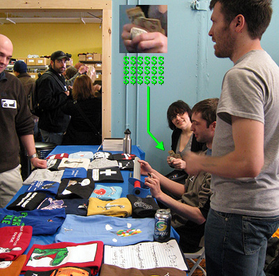
Here I am bookended by the dynamic damefella duo, Emily and Joey, who produce the comic that is called a softer world. These are really cool people to hang out with and talk to and stuff! Here Emily rifles through her mad wad of Benjies, or at least I'm pretty sure those are Benjies. Cause that's what we're all about here, knocking down sick bank and leafing through our pimpin' hustle-bucks. Joey is the sort of dude who seems like he is always on the verge of either beating the shit out of you, or giving you a hug, in a precisely equal distribution of probability.
Oh yeah, up there I think is one of those moments where I was talking to someone while pretending to be Ryan North, poised in front of all his dinosaur merchandise. He would pretend to be me too, and brandish vivid tales about how he drew a lot of pages about a guy who likes candy corn or something, and possibly wore a hat at one point. Our marks were none the wiser to the ruse. You see, we play pranks as a thing we do.
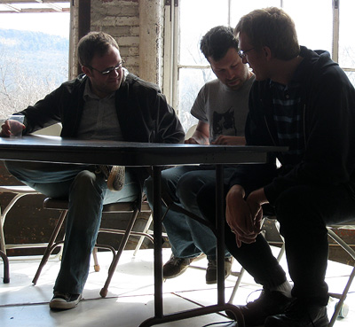
Here Chris(!!!) and Joey and Ryan prepare for a panel discussion, comparing notes on how to be a hilarious bunch of outrageous motherfuckers.
By the way, is Dr. McNinja great? Uh let me think.
YEAH, IT IS.
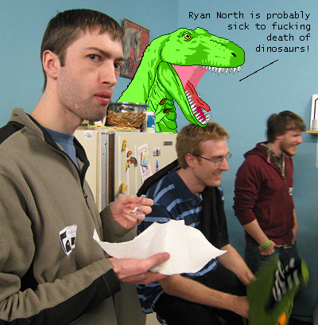
I eat cake which is shaped like a pork chop. You will have to take my word for it that that was the shape of the cake. Ryan is holding an alligator head for some reason, which is confusing.
Ryan is a really nice guy. I think being a really nice guy might be his super power or something. It's kind of a dumb super power and it makes it really easy to defeat him in the martial combats.
Also one of his powers is being very TALL.
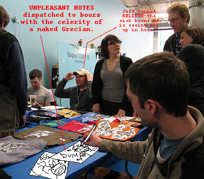
Eventually I sat in the proximity of my own shit and pretended to not be Ryan for a while. I drew some stuff for people who liked my comic. (But not sick burns, I saved those for my foes.) Everybody who approached me was really cool. What can I say, everyone who likes my stuff is amazing almost by definition.
Jeffrey is the grand arch-magnate of Topatoco and is an exceptional human being as well. He and I once drew crude frogs that wore capes, once upon a slippery era long-sopped by time’s absorbent sponge. The Topatoco HQ is quite an impressive compound and looks like a wonderful place to do business. Jeffrey probably has one of the sweetest gigs in the world, possibly second only to what I do, which is basically nothing at all. I mean I draw stuff sometimes, but whatever.
Speaking of authoritativity, the event was spearheaded and organized by Meredith Gran, who does a really great comic about a young octopus who lives in New York City, trying to make it out there. Ok, that is not what the comic is about. But you should go read it and see what it is about!
My accomp-hort Cindy came along and took some pictures. We didn't snap a lot, but here are a few which you may use to waft some of the ambiance into those gaping nostrils you call eyeballs.
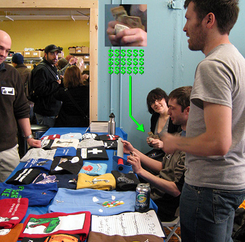
Here I am bookended by the dynamic damefella duo, Emily and Joey, who produce the comic that is called a softer world. These are really cool people to hang out with and talk to and stuff! Here Emily rifles through her mad wad of Benjies, or at least I'm pretty sure those are Benjies. Cause that's what we're all about here, knocking down sick bank and leafing through our pimpin' hustle-bucks. Joey is the sort of dude who seems like he is always on the verge of either beating the shit out of you, or giving you a hug, in a precisely equal distribution of probability.
Oh yeah, up there I think is one of those moments where I was talking to someone while pretending to be Ryan North, poised in front of all his dinosaur merchandise. He would pretend to be me too, and brandish vivid tales about how he drew a lot of pages about a guy who likes candy corn or something, and possibly wore a hat at one point. Our marks were none the wiser to the ruse. You see, we play pranks as a thing we do.
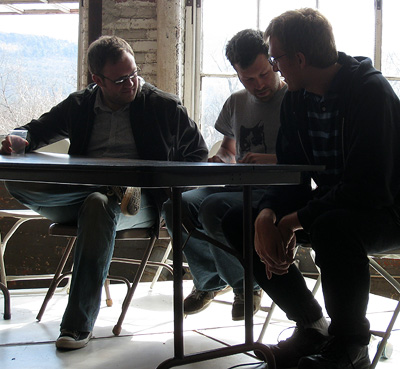
Here Chris(!!!) and Joey and Ryan prepare for a panel discussion, comparing notes on how to be a hilarious bunch of outrageous motherfuckers.
By the way, is Dr. McNinja great? Uh let me think.
YEAH, IT IS.
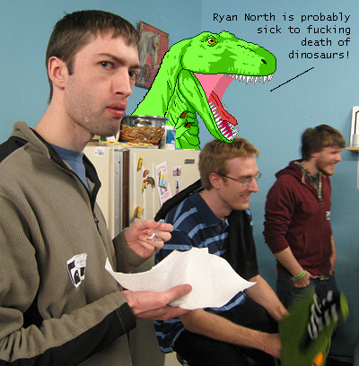
I eat cake which is shaped like a pork chop. You will have to take my word for it that that was the shape of the cake. Ryan is holding an alligator head for some reason, which is confusing.
Ryan is a really nice guy. I think being a really nice guy might be his super power or something. It's kind of a dumb super power and it makes it really easy to defeat him in the martial combats.
Also one of his powers is being very TALL.
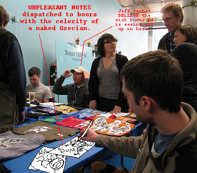
Eventually I sat in the proximity of my own shit and pretended to not be Ryan for a while. I drew some stuff for people who liked my comic. (But not sick burns, I saved those for my foes.) Everybody who approached me was really cool. What can I say, everyone who likes my stuff is amazing almost by definition.
Jeffrey is the grand arch-magnate of Topatoco and is an exceptional human being as well. He and I once drew crude frogs that wore capes, once upon a slippery era long-sopped by time’s absorbent sponge. The Topatoco HQ is quite an impressive compound and looks like a wonderful place to do business. Jeffrey probably has one of the sweetest gigs in the world, possibly second only to what I do, which is basically nothing at all. I mean I draw stuff sometimes, but whatever.
Saturday, March 14, 2009
The pot of gold at the end of the cultural rainbow...
Is me.
And anyone who chooses to stand up for diversity, strong civic spirit, and multi-cultural harmony in the community.
When I originally included this mural in Problem Sleuth, I found it on the internet and thought it was particularly striking. I had no idea at the time that it was physically located about 15 minutes from where I lived, in Cambridge MA.
Naturally I had to go celebrate its existence as well as my physical proximity to it by standing in front of it. Intrepid fellow diversity enthusiast Tyler came along too, and here you see him somewhat nonplussed by the mischievous stowaway clinging to his hapless personage.
Prior to discovering the mural was local, I had wondered how to get information on the artist in order to give credit. Now that is possible. Let us all bask in the majesty of David Fitcher's painterly vision.
There is an amazing amount of these "cultural urban murals" in the Boston area. Fichter's work is apparently everywhere, including two striking works of genius less than a block from my residence. I'll take a photo of those too some time.
But there is a lot of lesser talent glomming on to otherwise respectable city surfaces as well. Mr. Galvez's heart is in the right place, I suppose.
Fichter's stuff may be a little thematically silly, but at least it's very well executed. Galvez's shit is just fucking pandemonium. The composition is an airy, rambling hodgepodge of disagreeable-looking horseshit. These grotesque harbingers of diversity at once frenzy to stoke my nightmares, or whatever you call the type of dream you'd like to shake by the collar and backhand repeatedly. Where do I start with this thing?
1) I've never seen a man employ a conductor's baton and rollerskates to assist him in his quest for spare change.
2) Affable street walkers hustle up a buck on the lemon-lime road. Any takers? How about the kid to the left with the broken foot and the overalls 20 sizes too big for him?
3) This Village People understudy wears on his face the one emotion, regardless of race or creed, with which we are all intimately familiar: profound shame.
3.5) Random-ass black woman: check.
4) "What should I do with all this empty, blood-red space in the background? How about I just sprinkle in a few malingering ragdoll dipshits?"
5) It was probably a perfectly nice old lady this was referenced from. The decision to use this *particular* photo of her, and make her a dominating 9-foot fixture in the mural: DUBIOUS. She's probably been dead for years. Her legacy: BOUNDLESS, SOUL-PUMICING TERROR.
6) Is this some sort of black trucker vampire? Is this child in danger? I might suspect so, but she looks so sinister herself that she's likely his netherworldly superior.
7) I don't... I don't even know.
8) Punk rockers are a culture too. Get him in there. It reminds us that despite appearances, deep down we are all alike: harrowingly one-dimensional.
9) Other cultures can at times be quite flamboyant! This man has passionate feelings in his bosom, and they must take the shape of rhythm come hell or high water. He'd sooner cut out his heart than cease wailing on his bongos. If someone snuck up behind him and pulled his hat down over his head, can you really say you'd have the maturity to not laugh at his expense? The answer is no.
10) Fanciful headwear on a black woman: check.
11) Is this a culture? What sort of culture is it? Caucasians who wear togas while playing jazz? Are we saying that embarrassingly drunk people comprise a culture unto themselves? Memo to this guy: you are fired from Diversity.
12) Disturbing encroachment on chubbykid moneyshot: check.
13) And these people? Perhaps this man is a poor caricature of Ray Romano? I am going to guess that this family is vaguely Mediterranean due to the bit of chest hair poking out from the man's shirt to the right. The hairy dude also seems to be rather oily. Is it really TOO much to ask that our murals celebrating racial diversity not be subtly racist too? Additionally -- the woman appears to be trying her best to not cause me physical harm with her facial expression. She is not succeeding.
Also to the upper right, it looks like camera glare has obscured the Indian family riding their fucking magic carpet, thus sparing you a joke about them. THIS TIME.
{kind=link}
And anyone who chooses to stand up for diversity, strong civic spirit, and multi-cultural harmony in the community.
When I originally included this mural in Problem Sleuth, I found it on the internet and thought it was particularly striking. I had no idea at the time that it was physically located about 15 minutes from where I lived, in Cambridge MA.
Naturally I had to go celebrate its existence as well as my physical proximity to it by standing in front of it. Intrepid fellow diversity enthusiast Tyler came along too, and here you see him somewhat nonplussed by the mischievous stowaway clinging to his hapless personage.
{kind=link}
Prior to discovering the mural was local, I had wondered how to get information on the artist in order to give credit. Now that is possible. Let us all bask in the majesty of David Fitcher's painterly vision.
{kind=link}
There is an amazing amount of these "cultural urban murals" in the Boston area. Fichter's work is apparently everywhere, including two striking works of genius less than a block from my residence. I'll take a photo of those too some time.
But there is a lot of lesser talent glomming on to otherwise respectable city surfaces as well. Mr. Galvez's heart is in the right place, I suppose.
{kind=link}
Fichter's stuff may be a little thematically silly, but at least it's very well executed. Galvez's shit is just fucking pandemonium. The composition is an airy, rambling hodgepodge of disagreeable-looking horseshit. These grotesque harbingers of diversity at once frenzy to stoke my nightmares, or whatever you call the type of dream you'd like to shake by the collar and backhand repeatedly. Where do I start with this thing?
1) I've never seen a man employ a conductor's baton and rollerskates to assist him in his quest for spare change.
2) Affable street walkers hustle up a buck on the lemon-lime road. Any takers? How about the kid to the left with the broken foot and the overalls 20 sizes too big for him?
3) This Village People understudy wears on his face the one emotion, regardless of race or creed, with which we are all intimately familiar: profound shame.
3.5) Random-ass black woman: check.
4) "What should I do with all this empty, blood-red space in the background? How about I just sprinkle in a few malingering ragdoll dipshits?"
5) It was probably a perfectly nice old lady this was referenced from. The decision to use this *particular* photo of her, and make her a dominating 9-foot fixture in the mural: DUBIOUS. She's probably been dead for years. Her legacy: BOUNDLESS, SOUL-PUMICING TERROR.
6) Is this some sort of black trucker vampire? Is this child in danger? I might suspect so, but she looks so sinister herself that she's likely his netherworldly superior.
7) I don't... I don't even know.
8) Punk rockers are a culture too. Get him in there. It reminds us that despite appearances, deep down we are all alike: harrowingly one-dimensional.
9) Other cultures can at times be quite flamboyant! This man has passionate feelings in his bosom, and they must take the shape of rhythm come hell or high water. He'd sooner cut out his heart than cease wailing on his bongos. If someone snuck up behind him and pulled his hat down over his head, can you really say you'd have the maturity to not laugh at his expense? The answer is no.
10) Fanciful headwear on a black woman: check.
11) Is this a culture? What sort of culture is it? Caucasians who wear togas while playing jazz? Are we saying that embarrassingly drunk people comprise a culture unto themselves? Memo to this guy: you are fired from Diversity.
12) Disturbing encroachment on chubbykid moneyshot: check.
13) And these people? Perhaps this man is a poor caricature of Ray Romano? I am going to guess that this family is vaguely Mediterranean due to the bit of chest hair poking out from the man's shirt to the right. The hairy dude also seems to be rather oily. Is it really TOO much to ask that our murals celebrating racial diversity not be subtly racist too? Additionally -- the woman appears to be trying her best to not cause me physical harm with her facial expression. She is not succeeding.
Also to the upper right, it looks like camera glare has obscured the Indian family riding their fucking magic carpet, thus sparing you a joke about them. THIS TIME.
Tuesday, March 10, 2009
THE END OF PROBLEM SLEUTH.
03/10/08 - 03/10/09.
3 detectives
365 days
1621 pages
1915 images
142 megabytes
45,000 words
0 sacred urns toppled
0 mystic ruins desecrated
0 hallowed tombs defiled
A couple hundred people tuned in on the first day. A couple hundred thousand tuned in on the last.
The beginning was humble in ways that go beyond a simple reader count. Humble might not even be the right word. The word's blade might need to be dulled further -- from something used to slice butter, to something used to ladle paste into the mouth of an infant.
I was wondering what sort of story to make, so I drew a detective on a blank canvas. Then I thought he should be in a room, of course. Probably a detective's office, because that's where detectives usually are. He needed a phone and a gun. Clearly those two items would alone suffice, I thought. The wall over there looked a little blank so I drew a safe. A window for ambience. A door for exit, which may or may not have been locked; I wasn't sure yet.
What I was also oblivious to was the two other detectives who would show up later, and to their adjacent offices. I was oblivious to the world of imagination, and the desk-made fort that would be its gateway. I didn't know the window lead there either, and I didn't know you could only get to that place I didn't know about if it was plugged in. I didn't know about the candy in his pocket, the dames in their dollhouse, the kingpin in his ship, or the weasel in his palace.
Those I's would be dotted by your suggestions, and the T's would be crossed by my reaction to them. It was a storytelling game of cat and mouse, and you presumably just finished reading the aftermath of our year-long, Tom and Jerry-style rampage through the house.
And if at the beginning you told me I would have a group of characters fight a single giant monster every day for almost six months, I would have told you... well, I would have told you that sounds awesome! But then I probably wouldn't have done it. Because I would have known I was going to do it. And what fun would that have been?
It's hard to believe it's done, I'm sure mostly for me personally. If you do the math, you'll note I produced an average of more than 5 images per day, every single day for that year-long stretch. In retrospect, it was a matter of routine inseparable from day to day existence. I didn't notice the effort, and I didn't notice the year. It wasn't a labor. It was just what I did.
But I guess it's more than just a shift in habitual momentum. There's a note of melancholy. These detectives won't be up to their antics anymore (unless I make deliberate exceptions to their retirement, of course). It seems strange to me that these characters have become so well defined in my mind, even though they've never uttered a single word. It was never supposed to be that way. It was just supposed to be about a cruddy-looking dude in his office.
But that said, I'm pretty excited to get working on something new. And maybe, if you're not all that busy, we could take the first step of this amazing new journey together.
Thanks for reading!
- Andrew.
3 detectives
365 days
1621 pages
1915 images
142 megabytes
45,000 words
0 sacred urns toppled
0 mystic ruins desecrated
0 hallowed tombs defiled
A couple hundred people tuned in on the first day. A couple hundred thousand tuned in on the last.
The beginning was humble in ways that go beyond a simple reader count. Humble might not even be the right word. The word's blade might need to be dulled further -- from something used to slice butter, to something used to ladle paste into the mouth of an infant.
I was wondering what sort of story to make, so I drew a detective on a blank canvas. Then I thought he should be in a room, of course. Probably a detective's office, because that's where detectives usually are. He needed a phone and a gun. Clearly those two items would alone suffice, I thought. The wall over there looked a little blank so I drew a safe. A window for ambience. A door for exit, which may or may not have been locked; I wasn't sure yet.
What I was also oblivious to was the two other detectives who would show up later, and to their adjacent offices. I was oblivious to the world of imagination, and the desk-made fort that would be its gateway. I didn't know the window lead there either, and I didn't know you could only get to that place I didn't know about if it was plugged in. I didn't know about the candy in his pocket, the dames in their dollhouse, the kingpin in his ship, or the weasel in his palace.
Those I's would be dotted by your suggestions, and the T's would be crossed by my reaction to them. It was a storytelling game of cat and mouse, and you presumably just finished reading the aftermath of our year-long, Tom and Jerry-style rampage through the house.
And if at the beginning you told me I would have a group of characters fight a single giant monster every day for almost six months, I would have told you... well, I would have told you that sounds awesome! But then I probably wouldn't have done it. Because I would have known I was going to do it. And what fun would that have been?
It's hard to believe it's done, I'm sure mostly for me personally. If you do the math, you'll note I produced an average of more than 5 images per day, every single day for that year-long stretch. In retrospect, it was a matter of routine inseparable from day to day existence. I didn't notice the effort, and I didn't notice the year. It wasn't a labor. It was just what I did.
But I guess it's more than just a shift in habitual momentum. There's a note of melancholy. These detectives won't be up to their antics anymore (unless I make deliberate exceptions to their retirement, of course). It seems strange to me that these characters have become so well defined in my mind, even though they've never uttered a single word. It was never supposed to be that way. It was just supposed to be about a cruddy-looking dude in his office.
But that said, I'm pretty excited to get working on something new. And maybe, if you're not all that busy, we could take the first step of this amazing new journey together.
Thanks for reading!
- Andrew.
Saturday, February 21, 2009
If you drew a comic called Super Frog at age 11
Then take a number.
Jeffrey-OC/WIGU-Rowland and I both got ours at the deli counter of weird coincidences involving crudely drawn amphibious superheroes. My immediate thought was this was like an especially shitty or an especially awesome episode of Lost. Maybe it is both.
The year was 1986, and as he tells it, Jeff's 11 year-old mind conceived of a hero named Superfrog (no space).
Flash forward to the year 1990, a time when my 11 year-old mind would independently duplicate this feat, and bring into the world -- again -- a hero named Super Frog (but with a space!)
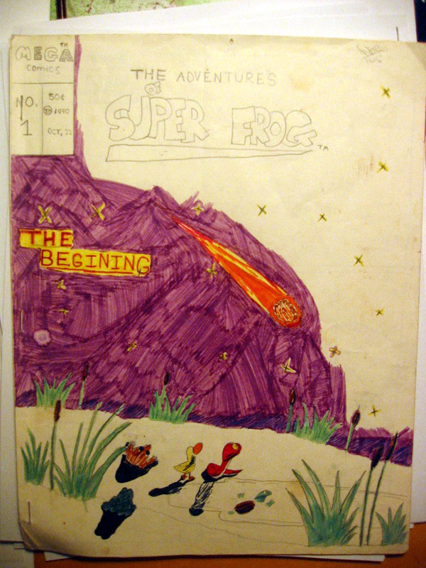
This cover stirs visions of a an intrepid young lad soldiering through that night sky with a thin, purple magic marker, thrashing in every conceivable direction like a crazed raccoon trying to escape an empty swimming pool. But it looks like he eventually and quite understandably muttered "fuck this" and stomped off to plunder the kitchen for some delicious Slimer-themed Ecto Cooler Hi-C.
You'll note some striking similarities between my and Jeff's work, aside from breadth of ambition. (Amphibition?)
They both dwelt on swampy planets. Though mine was supposed to be Earth, since my story followed a Superman template. I figured he might as well since he shared a prefix with that hero. Jeff's looks like it fits into more of a Star Wars mold, which would make "Amphibia" somewhat akin to Yoda's swampy planet I guess.
Also note that while Jeff's planet was plagued by a "terrorist group called MEGA", my story was published by MEGA comics. This is obviously a word one dare not leave uncapitalized. Also both these frogs had really cool underground lairs.
But I'm afraid that's where the similarities end.
11 year-old Jeff's handwriting is actually better than mine is today, let alone the grisly marks which I pawned off as letters at age 11. You'll also note Jeff could actually string together a pretty decent sentence. "But, Amphibia was not without its evil forces…" Note the fairly sophisticated use of the double negative to take a little something off the sentence for rhetorical purposes. He could have taken the easy route and said "Amphibia had so many evil forces!" Or, "Amphibia had all hella evil forces up ins, yo!" if he wanted to produce a tone of jocular irony. (Although I doubt that sort of irony had been invented yet in 1986.) The point is, he wasn't using language as a blunt instrument to say what he wanted to say.
Whereas I took that blunt instrument, used it to murder a family of four, and hid the bodies in my garage. You will observe this sample.
It's actually hard for me to believe an 11 year-old did this. To me it doesn't look very far beyond the reach of a 6 year-old. Where does one even begin dissecting this?
Ok, the Dr. Claw-style boss wants his henchman with an upsettingly phallic hat to go down to the "science plant". Where they do science. He wants him to steal some science. Fair enough. Then he instructs him to take a "disgise", and we shortly receive a humorous payoff. His disguise is simply a jacket. Ha ha, right?
Maybe. Except that I explicitly remember that I did not intend for this to be a joke. I was serious. That was his serious disguise.
Then at gunpoint, or maybe tube of Ben-Gaypoint, he commands the aardvark fellow to surrender the main project. Like, the main science thing they do. He wants him to hand over the big science thing. But it turns out he "already launched it". He launched all the science they were working on into space, and he is sorry about it. Maybe if the snake with the dick hat got there a little earlier, all that science would still be there.
Then later on in the comic when I got tired of all this storytelling bullshit, I went and drew a map. This was my first hack at a comic, and I don't think I actually even liked comics. All I really wanted to do was design the next Super Mario Bros. game and mail it to some Japanese developers. I actually tried to do this several times, and I just assumed whoever looked at it would be blown away by my ideas while making little hushed noises of polite awe in that distinctly Japanese way.
When I was 11 my teachers thought I was retarded. This isn't some sort of joke to make you laugh. This is actually true. For a while thereafter I resented the accusation. But looking back on this work I'm starting to think they might have been technically right. Whatever the case, I don't know why I ever had the notion that I was artistically inclined before age 11.
But in looking through this archive of relics, it's pretty clear my artistic development took a major leap in the following year. I did this drawing when I was 12. Ok, so it's obviously inspired very heavily by Rob Liefeld's work in the early 90s. Still, looking back on it I think it's probably better than anything Liefeld ever did. I even came up with a kickass signature brand for that year, "DREW92". WHOA, COOL DUDE!!!
Then from there it appears my artwork enjoyed pretty | brisk | strides through the rest of high school. Actually that first image there seems somewhat reminiscent of a Problem Sleuth villain, even though I drew it about 15 years ago.
My and Jeff's stroll down Super Frog lane is reminding me the more things change, the more they stay the same. Don't believe me?
I don't know why I didn't scan the rest of Super Frog. The samples above are from an archive consisting of photos I took about five years ago. I'm not sure what my thinking was at the time.
I'll see if I can dig up the original book and scan all of it. If I do, I'll post it. But I'll be trailing behind Jeff's documentation of his old comic, which I suppose is only fitting. He was always ahead of the curve on this Superfrog/Super[space]Frog business.
Oh, also another guy cropped up who did a Superfrog (Super-Frog, with a dash!) when he was a youngster.
Look, if you are 11 and you are a boy, here's what's up. You're going to be drawing a COMIC. That comic will be about a FROG. That frog is also gonna be SUPER. This is what your DNA will tell you to do, and if you don't do it there's probably something wrong with you. This is what SCIENCE says will happen, and this can be verified, assuming some dumbass doesn't go ahead and launch that science into space first.
Jeffrey-OC/WIGU-Rowland and I both got ours at the deli counter of weird coincidences involving crudely drawn amphibious superheroes. My immediate thought was this was like an especially shitty or an especially awesome episode of Lost. Maybe it is both.
The year was 1986, and as he tells it, Jeff's 11 year-old mind conceived of a hero named Superfrog (no space).
Flash forward to the year 1990, a time when my 11 year-old mind would independently duplicate this feat, and bring into the world -- again -- a hero named Super Frog (but with a space!)
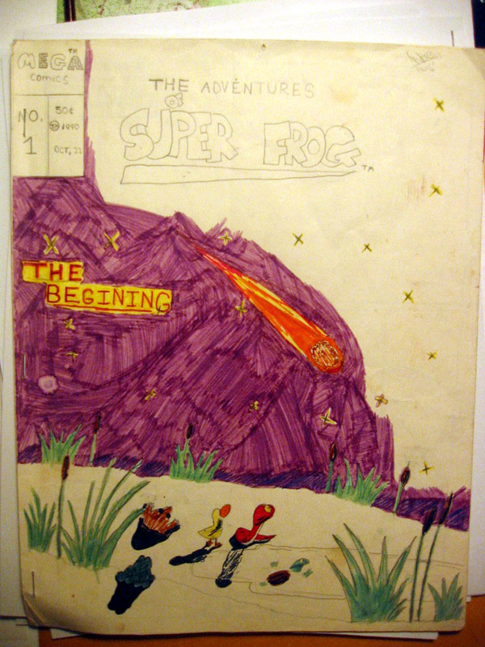
This cover stirs visions of a an intrepid young lad soldiering through that night sky with a thin, purple magic marker, thrashing in every conceivable direction like a crazed raccoon trying to escape an empty swimming pool. But it looks like he eventually and quite understandably muttered "fuck this" and stomped off to plunder the kitchen for some delicious Slimer-themed Ecto Cooler Hi-C.
You'll note some striking similarities between my and Jeff's work, aside from breadth of ambition. (Amphibition?)
They both dwelt on swampy planets. Though mine was supposed to be Earth, since my story followed a Superman template. I figured he might as well since he shared a prefix with that hero. Jeff's looks like it fits into more of a Star Wars mold, which would make "Amphibia" somewhat akin to Yoda's swampy planet I guess.
Also note that while Jeff's planet was plagued by a "terrorist group called MEGA", my story was published by MEGA comics. This is obviously a word one dare not leave uncapitalized. Also both these frogs had really cool underground lairs.
But I'm afraid that's where the similarities end.
11 year-old Jeff's handwriting is actually better than mine is today, let alone the grisly marks which I pawned off as letters at age 11. You'll also note Jeff could actually string together a pretty decent sentence. "But, Amphibia was not without its evil forces…" Note the fairly sophisticated use of the double negative to take a little something off the sentence for rhetorical purposes. He could have taken the easy route and said "Amphibia had so many evil forces!" Or, "Amphibia had all hella evil forces up ins, yo!" if he wanted to produce a tone of jocular irony. (Although I doubt that sort of irony had been invented yet in 1986.) The point is, he wasn't using language as a blunt instrument to say what he wanted to say.
{kind=link}
Whereas I took that blunt instrument, used it to murder a family of four, and hid the bodies in my garage. You will observe this sample.
{kind=link}
It's actually hard for me to believe an 11 year-old did this. To me it doesn't look very far beyond the reach of a 6 year-old. Where does one even begin dissecting this?
Ok, the Dr. Claw-style boss wants his henchman with an upsettingly phallic hat to go down to the "science plant". Where they do science. He wants him to steal some science. Fair enough. Then he instructs him to take a "disgise", and we shortly receive a humorous payoff. His disguise is simply a jacket. Ha ha, right?
Maybe. Except that I explicitly remember that I did not intend for this to be a joke. I was serious. That was his serious disguise.
Then at gunpoint, or maybe tube of Ben-Gaypoint, he commands the aardvark fellow to surrender the main project. Like, the main science thing they do. He wants him to hand over the big science thing. But it turns out he "already launched it". He launched all the science they were working on into space, and he is sorry about it. Maybe if the snake with the dick hat got there a little earlier, all that science would still be there.
Then later on in the comic when I got tired of all this storytelling bullshit, I went and drew a map. This was my first hack at a comic, and I don't think I actually even liked comics. All I really wanted to do was design the next Super Mario Bros. game and mail it to some Japanese developers. I actually tried to do this several times, and I just assumed whoever looked at it would be blown away by my ideas while making little hushed noises of polite awe in that distinctly Japanese way.
{kind=link}
When I was 11 my teachers thought I was retarded. This isn't some sort of joke to make you laugh. This is actually true. For a while thereafter I resented the accusation. But looking back on this work I'm starting to think they might have been technically right. Whatever the case, I don't know why I ever had the notion that I was artistically inclined before age 11.
But in looking through this archive of relics, it's pretty clear my artistic development took a major leap in the following year. I did this drawing when I was 12. Ok, so it's obviously inspired very heavily by Rob Liefeld's work in the early 90s. Still, looking back on it I think it's probably better than anything Liefeld ever did. I even came up with a kickass signature brand for that year, "DREW92". WHOA, COOL DUDE!!!
{kind=link}
Then from there it appears my artwork enjoyed pretty | brisk | strides through the rest of high school. Actually that first image there seems somewhat reminiscent of a Problem Sleuth villain, even though I drew it about 15 years ago.
{kind=link}
{kind=link}
{kind=link}
My and Jeff's stroll down Super Frog lane is reminding me the more things change, the more they stay the same. Don't believe me?
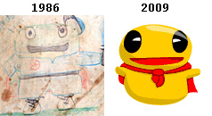
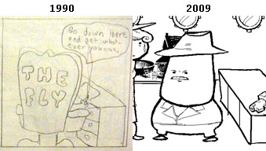
Mob boss villains separated by two decades.
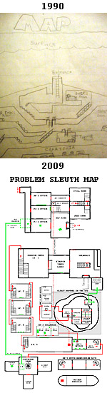
You're eventually supposed to grow out of shit like this, right?
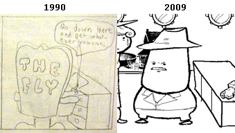
Mob boss villains separated by two decades.
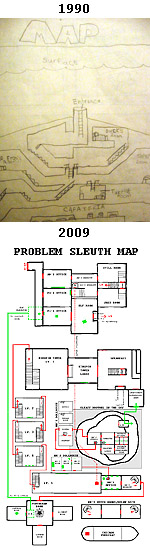
You're eventually supposed to grow out of shit like this, right?
I don't know why I didn't scan the rest of Super Frog. The samples above are from an archive consisting of photos I took about five years ago. I'm not sure what my thinking was at the time.
I'll see if I can dig up the original book and scan all of it. If I do, I'll post it. But I'll be trailing behind Jeff's documentation of his old comic, which I suppose is only fitting. He was always ahead of the curve on this Superfrog/Super[space]Frog business.
Oh, also another guy cropped up who did a Superfrog (Super-Frog, with a dash!) when he was a youngster.
Look, if you are 11 and you are a boy, here's what's up. You're going to be drawing a COMIC. That comic will be about a FROG. That frog is also gonna be SUPER. This is what your DNA will tell you to do, and if you don't do it there's probably something wrong with you. This is what SCIENCE says will happen, and this can be verified, assuming some dumbass doesn't go ahead and launch that science into space first.
Friday, February 13, 2009
BLOG REDUX: Bon Voyage, Tim and George
I'm really just reposting this article from my old blog so Byron can link to it in his new blog.
Originally posted: 06/24/08
---------------------------------------
Tim Russert and George Carlin both recently passed away, and it is time to honor their memory with the somber gravity that can only be conveyed by that sappy acoustic version of “Somewhere Over the Rainbow”.
It is also time for us to acknowledge that their very real souls have moved on to the very real afterlife, where their transient physical identities will persist relentlessly for all eternity.
As such I have put together this collage in memoriam as is the stoic tradition of this blog [EDIT: RE: MY OLD BLOG]. So keep a seat warm for me, George. I can’t wait for your bit on the 10 words you can’t say in heaven! And Tim, keep giving ‘em hell! ;)
Monday, February 9, 2009
How do I prank thee? Let me qwantz the ways.
Ok so here's what up.
I was recently embroiled (am still embroiled???) in this exotic prankster's feud with this guy who draws dinosaurs saying things. Ok he doesn't really draw them but anyway. It was fun (is still fun???) but then due to some mental handicap specific to the needlessly officious I deleted some of my earlier prankins because the news section was getting a little long in the tooth. VERTICALLY SPEAKING.
It was like a great venerable redwood and I was sort of like an especially angry Paul Bunyan, or just some really terrifically huge dude with an axe who hates trees, and possibly harbors disdain for the very concept of HEIGHT ITSELF.
So I did this and dusted my hands but then some people started yelling at me.
So I'm like, ok, I guess I can put it all back up somehow, even though that stuff I deleted is gone forever. I don't exactly have a stout archival repository for every frivolous little EPIC FUCKING BATTLESCAPE AMONG WORLD CLASS PRACTICAL JAPESTERS that happens to flutter through the perfumey breeze of my life.
I promised I'd take a crack at reconstructing what I said, and in the process probably charting new frontiers in the realm of dubious fidelity.
Anyway why don't we take this thing from the top. Ryan said this once upon a time, and I have emboldened the key point.
February 4th, 2009: Andrew "MS Paint Adventures" Hussie has been putting together some videos with his friend Jan van den Hemel where they re-edit some Star Trek: TNG footage into hilarious short videos. They're great, you guys! I recommend watching them in order because it is comedy gold that builds on itself really nicely. Andrew Hussie is quickly becoming the only person whose house I park outside at night. I just want to watch him eat his dinner.
And I was tickled he said it, but then I went on to say (probably) something like this.
Ryan, you're not fooling anyone sitting in your car, sort of ducking down behind your dashboard like that. [I think I probably mentioned something about opera glasses, or goggles here, which he retrieved from his glovebox. I'm not sure why I would suggest he keep such a thing in his glovebox. I think my motivation was probably to use language to cast him as a bit of a lithe-fingered fop. I'm going to go ahead and assume that I was successful in this respect, and blow my whistle while hoisting my arms for the touchdown sign like football refs do whenever they're in the vicinity of a sick burn.
Also I mentioned something about how I was eating a turkey sandwich or something. Oops, I should probably return to my "voice".]
Ryan, I am eating a turkey sandwich or something.
Ok, Ryan caught wind of all that PRETTY QUICK.
February 5th, 2009: UPDATE: Last night Andrew had a open-faced turkey sandwich with a glass of water. He took a bite and chewed, frowning at his dinner. He sprinkled some pepper on top, and took another bite. The sandwich appeared to satisfy him now, and he dispatched it quickly, drinking the water all in one go at the end. Impressive. He then reached for his empty glass, turning it upside down and using it like a microphone. I couldn't hear clearly, but it sounded like he was reciting "Baby Got Back", sitting there at the dinner table. I felt like he was putting on a show for my benefit. I got suspicious - did he know he was being watched? But then some water slide down the glass onto his lap and he jumped up, brushing his slacks down and running out of the room, cursing. It was that little detail that made the whole evening worthwhile.
I said something kind of complicated in response to this… wait, oops, hang on…
Ryan. I'm going to say something kind of complicated in response to this. The basic gist of it will be that while you are distracted by my outrageous domestic broadcast and its embarrassing void of self-awareness, I took the opportunity to deploy a servant through my cellar door and into the yard and had him shove a whole can of cookie dough into your car's tailpipe.
CHECK AND MATE, prank buddy.
Alright I didn't say that last part, but in just transcribing it now, oh man. It was just so sweet how I did that to his car.
Ryan didn't really see it that way though.
February 6th, 2009: Okay, so I guess Andrew has, like, a butler? Who he pays to stuff food into my car's exhaust pipe? And that's fine, that's cool. We all need jobs. But when I drive home and my car stalls out a few minutes in and it's because the tail pipe is blocked with chocolate-chip cookie dough, it's not that awesome. Andrew's house is at the end of a deserted lane surrounded by a bunch of fields, and now I'm stuck in the middle of nowhere.
So I walk back to Andrew's place - takes about 20 minutes. I ring the doorbell. No answer. I knock on the door. All the lights are on; I know he's home. I go round back and I stand in the dark of his back yard and I can see him there in his living room. His soggy slacks are spread out on the couch. His underpants are tasteful. He's rapping again. It sounds like - yes, it's Rapper's Delight. Andrew's really belting it: "Have you ever went over a friend's house to eat / And the food just aint no good? / I mean the macaroni's soggy, the peas are mushed / and the chicken tastes like wood."
I've never realized how much of that song is about food.
At this point I don't actually need to make up an approximate ridiculous reply, because I can submit word for word the ACTUAL RIDICULOUS REPLY which I typed. On a KEYBOARD:
Ok, well it seems Mr. North didn't totally appreciate the Pop n Fresh emissions test I had old Snootington slip into his muffler. Some people just don't know how to take a joke.
February 9th, 2009: I woke up parked outside my house. Andrew was nowhere to be seen. My shirt was folded neatly in my lap and I was wearing a very nice pair of suspenders. Someone had written on my chest: "Human Hug Factory". I couldn't remember, but I knew - I know - that everything will be alright.
As I slip back into "hypothetical reply" mode for some reason again, I'm caused to wonder by Ryan's tone if he is treating my submission to Urban Dictionary as a sort of sweeping denouement to our grand mutual Prankisode.
I could hardly fault him if his intent was a "rhetorical wind-down", a sort of genteel "that's all, folks" in the manner so comfortable and form-fitting to men of North's class and distinction.
Could it be that this borderline-psychotic transcription poses as the final blunt thud on the horse's soft carcass? Or could it be the calm in the storm before North's next ferocious gotcha?
Oh Jesus.
I'd better get back to my mansion and order those goodfornothing butlers back to their fucking battle stations…
I was recently embroiled (am still embroiled???) in this exotic prankster's feud with this guy who draws dinosaurs saying things. Ok he doesn't really draw them but anyway. It was fun (is still fun???) but then due to some mental handicap specific to the needlessly officious I deleted some of my earlier prankins because the news section was getting a little long in the tooth. VERTICALLY SPEAKING.
It was like a great venerable redwood and I was sort of like an especially angry Paul Bunyan, or just some really terrifically huge dude with an axe who hates trees, and possibly harbors disdain for the very concept of HEIGHT ITSELF.
So I did this and dusted my hands but then some people started yelling at me.
So I'm like, ok, I guess I can put it all back up somehow, even though that stuff I deleted is gone forever. I don't exactly have a stout archival repository for every frivolous little EPIC FUCKING BATTLESCAPE AMONG WORLD CLASS PRACTICAL JAPESTERS that happens to flutter through the perfumey breeze of my life.
I promised I'd take a crack at reconstructing what I said, and in the process probably charting new frontiers in the realm of dubious fidelity.
Anyway why don't we take this thing from the top. Ryan said this once upon a time, and I have emboldened the key point.
February 4th, 2009: Andrew "MS Paint Adventures" Hussie has been putting together some videos with his friend Jan van den Hemel where they re-edit some Star Trek: TNG footage into hilarious short videos. They're great, you guys! I recommend watching them in order because it is comedy gold that builds on itself really nicely. Andrew Hussie is quickly becoming the only person whose house I park outside at night. I just want to watch him eat his dinner.
And I was tickled he said it, but then I went on to say (probably) something like this.
Ryan, you're not fooling anyone sitting in your car, sort of ducking down behind your dashboard like that. [I think I probably mentioned something about opera glasses, or goggles here, which he retrieved from his glovebox. I'm not sure why I would suggest he keep such a thing in his glovebox. I think my motivation was probably to use language to cast him as a bit of a lithe-fingered fop. I'm going to go ahead and assume that I was successful in this respect, and blow my whistle while hoisting my arms for the touchdown sign like football refs do whenever they're in the vicinity of a sick burn.
Also I mentioned something about how I was eating a turkey sandwich or something. Oops, I should probably return to my "voice".]
Ryan, I am eating a turkey sandwich or something.
Ok, Ryan caught wind of all that PRETTY QUICK.
February 5th, 2009: UPDATE: Last night Andrew had a open-faced turkey sandwich with a glass of water. He took a bite and chewed, frowning at his dinner. He sprinkled some pepper on top, and took another bite. The sandwich appeared to satisfy him now, and he dispatched it quickly, drinking the water all in one go at the end. Impressive. He then reached for his empty glass, turning it upside down and using it like a microphone. I couldn't hear clearly, but it sounded like he was reciting "Baby Got Back", sitting there at the dinner table. I felt like he was putting on a show for my benefit. I got suspicious - did he know he was being watched? But then some water slide down the glass onto his lap and he jumped up, brushing his slacks down and running out of the room, cursing. It was that little detail that made the whole evening worthwhile.
I said something kind of complicated in response to this… wait, oops, hang on…
Ryan. I'm going to say something kind of complicated in response to this. The basic gist of it will be that while you are distracted by my outrageous domestic broadcast and its embarrassing void of self-awareness, I took the opportunity to deploy a servant through my cellar door and into the yard and had him shove a whole can of cookie dough into your car's tailpipe.
CHECK AND MATE, prank buddy.
Alright I didn't say that last part, but in just transcribing it now, oh man. It was just so sweet how I did that to his car.
Ryan didn't really see it that way though.
February 6th, 2009: Okay, so I guess Andrew has, like, a butler? Who he pays to stuff food into my car's exhaust pipe? And that's fine, that's cool. We all need jobs. But when I drive home and my car stalls out a few minutes in and it's because the tail pipe is blocked with chocolate-chip cookie dough, it's not that awesome. Andrew's house is at the end of a deserted lane surrounded by a bunch of fields, and now I'm stuck in the middle of nowhere.
So I walk back to Andrew's place - takes about 20 minutes. I ring the doorbell. No answer. I knock on the door. All the lights are on; I know he's home. I go round back and I stand in the dark of his back yard and I can see him there in his living room. His soggy slacks are spread out on the couch. His underpants are tasteful. He's rapping again. It sounds like - yes, it's Rapper's Delight. Andrew's really belting it: "Have you ever went over a friend's house to eat / And the food just aint no good? / I mean the macaroni's soggy, the peas are mushed / and the chicken tastes like wood."
I've never realized how much of that song is about food.
At this point I don't actually need to make up an approximate ridiculous reply, because I can submit word for word the ACTUAL RIDICULOUS REPLY which I typed. On a KEYBOARD:
Ok, well it seems Mr. North didn't totally appreciate the Pop n Fresh emissions test I had old Snootington slip into his muffler. Some people just don't know how to take a joke.
{kind=link}
February 9th, 2009: I woke up parked outside my house. Andrew was nowhere to be seen. My shirt was folded neatly in my lap and I was wearing a very nice pair of suspenders. Someone had written on my chest: "Human Hug Factory". I couldn't remember, but I knew - I know - that everything will be alright.
As I slip back into "hypothetical reply" mode for some reason again, I'm caused to wonder by Ryan's tone if he is treating my submission to Urban Dictionary as a sort of sweeping denouement to our grand mutual Prankisode.
I could hardly fault him if his intent was a "rhetorical wind-down", a sort of genteel "that's all, folks" in the manner so comfortable and form-fitting to men of North's class and distinction.
Could it be that this borderline-psychotic transcription poses as the final blunt thud on the horse's soft carcass? Or could it be the calm in the storm before North's next ferocious gotcha?
Oh Jesus.
I'd better get back to my mansion and order those goodfornothing butlers back to their fucking battle stations…
Tuesday, February 3, 2009
Star Trek Edits
Recently I helped a friend edit some episodes of Star Trek: The Next
Generation. I've collected them all on this web page
here.
Some other things of note: Wil Wheaton (Wesley Crusher) from the show has seen them and written about it in his blog. The videos have also appeared on TV, a on a G4 broadcast called Attack of the Show. (It is mentioned in item number 4 on that clip.) They went as far as getting in costumes and sort of "acting out" the scenes from the particular episode they showed. Cool!
A few other notes on this, and some FAQish sort of stuff...
These were edited by Jan Van den Hemel, who's obviously pretty awesome at this. I helped him make these by writing these sort of "scripts", suggesting how to arrange clips, what lines to dub, and what sort of visual effects to try out. I also usually supply the, uh, external resources. Jan supplies a lot of input to the "scripting" process too. The result I think is a pretty effective fusion of our senses of humor, but of course all the technical editing gravitas is pure Jan.
We will probably keep making these videos, as long as it stays fun. We'll keep doing Star Trek for a while, but will likely also try using samples from other TV shows and movies later.
Some other things of note: Wil Wheaton (Wesley Crusher) from the show has seen them and written about it in his blog. The videos have also appeared on TV, a on a G4 broadcast called Attack of the Show. (It is mentioned in item number 4 on that clip.) They went as far as getting in costumes and sort of "acting out" the scenes from the particular episode they showed. Cool!
A few other notes on this, and some FAQish sort of stuff...
These were edited by Jan Van den Hemel, who's obviously pretty awesome at this. I helped him make these by writing these sort of "scripts", suggesting how to arrange clips, what lines to dub, and what sort of visual effects to try out. I also usually supply the, uh, external resources. Jan supplies a lot of input to the "scripting" process too. The result I think is a pretty effective fusion of our senses of humor, but of course all the technical editing gravitas is pure Jan.
We will probably keep making these videos, as long as it stays fun. We'll keep doing Star Trek for a while, but will likely also try using samples from other TV shows and movies later.
Wednesday, January 7, 2009
Need for the Steed
Exactly one year ago, I purchased a painting of a horse.
I chronicled this remarkable tale in my old blog. I repost the major excerpts from this adventure here today for posterity.
------
Posted 12/17/2007
“Fundraiser 07-08: Need for the Steed”
A lot of webmasters such as bloggers or webcomic authors have fundraisers from time to time. It’s usually for something like a new computer (they are upgrading so they can better bring YOU content. How benevolent!), or some other piece of electronic equipment, or maybe even a medical procedure.
This practice is of course self-indulgent bullshit. If you need money for something, go get a job and save the money yourself. Shaking coins from your readership like a piggybank at the threat of suspended content or hiatus is a crass move indeed.
Unless you have a really good reason, that is. Like me.
Today I am launching a bold fundraising campaign, “Fundraiser 07-08: Need for the Steed”, to obtain the monies necessary to purchase this incredible painting.
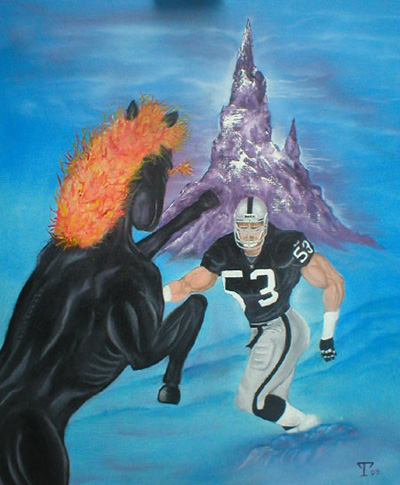
A while ago I discovered this artist simply named “T”. I was instantly smitten.
I “reviewed” (i.e. fawned over) the work at an earlier date. I have supplied an excerpt from this review here.
Everything about this painting is fucking amazing. Oakland Raiders linebacker Bill Romanowski fending off a wild, flaming black steed, in a mystical snowcapped mountain setting. I don’t know if it’s the concept alone, which itself is obviously mind-blowing. Maybe it’s also the curious, vaguely-humanoid musculature of the horse. It has a man’s bicep and triceps, and some very suspiciously man-like back muscles. Or maybe it’s the flaming mane, which on closer inspection, doesn’t resemble flame so much as synthetic orange puppet hair. This steed is either from hell, or has recently escaped Fraggle Rock, and is ready to tear the entire NFL a new asshole. But he didn’t count on bumping into Bill Romo (understandably, since he was bucking around the middle of the damned Himalayas).
I wrote that several years ago, and before I catch myself extolling the grandeur of the painterly genius of “T” again, I’ll just get to the point. A couple years ago around the same time of year, a little before Christmas, I wrote “T” an email offering to purchase the painting. In addition to gushing about his work with strategically vapid and obsequious prose, I offered him $50 for it. This offer was more than fair, I thought. He however declined, saying he simply could not accept any less than $400 for it.
Ok, so obviously I thought this guy was out of his fucking mind, turning down good money of any quantity for this ugly piece of shit. But that was probably just the anger of rejection talking. I would get over it.
Recently, I offered to buy the painting again, hoping he might have forgotten about his hard-line stance and come to terms with the unsellability of his putrid work (oops, there I go again with the bitterness. I have good reason again though.) I was prepared to offer another $50, maybe go a little higher if necessary. It’s turning into a kind of Christmas tradition. This is how all of the finest holiday traditions begin, I think. Through hostile adherence to something pointless and mildly excruciating.
This is how the latest interaction went down. Here’s the pitch I opened with:
———–
Hello,
I am writing you in regard to this beautiful painting
listed on your website. [link to painting]
Would you consider selling this?
A long time ago I wrote you on the same subject, but
it seemed the paintings were unavailable if I recall.
I am hoping they may be available now! What would you
charge for the above piece?
Thank you for your time.
———–
Personally I think it was a pretty well composed pitch. The tone is right, and I think I tailored my demeanor to seem just convincingly stupid enough to genuinely like this retarded painting (which I do!). Notice how I downplayed his vicious prior obstinacy by referring to the paintings as “unavailable if I recall”. Master stroke. Also I didn’t come out firing with a dollar figure, mainly because I didn’t want to scare him off right away. I needed to ease him into the fact that I am still only willing to part with $50 for this abomination.
Anyway, this was his reply.
———–
Hey Andrew,
Thanks for checking back. I do have a price on the painting it is $425. A few people have e-mailed me about buying it for less, but I would rather just hang on to it. I like the piece a lot and haven’t painted anything since it. It was to be the first in a series of sports fantasy paintings, but I have gotten side tracked with my job and other family things so I haven’t started painting again. I will get back to it soon. So, if you want it for the $425 it is yours, if not, I will keep it on my wall.
Thank you
T
———–
I grope for language to describe my reaction. Nay, a single word.
LIVIDITY.
$425?? So it seems he actually raised the price over the years. Oh, and PARDON my skepticism at the implication that he has received other offers over the years for his idiotic shit. He is probably only vaguely recollecting the ONE time it happened. From ME.
Naturally, I swallowed my indignation like the bitch I am. I just need that painting, and obviously it’s going to take more fancy footwork to pry it from his grubby, miserly hands. I responded, and this was my first sentence.
Wow, it is very cool that it is still for sale! I would
really love to have it.
Notice how easily I slip back into character. Whatever obscure pocket of personal acumen this is, I seem to possess it in spades. I probably could have been one of those spies who entrenches himself in Russian territory, uncovering intelligence on nuclear sites. Except instead of nukes, I would be disarming the Russian aristocracy of all their shitty paintings of horses, and vanishing with them into the night.
$425 is a lot of money for me. But I think your work
is good and you deserve to be compensated well for it.
If his heart wasn’t made of stone, it would melt at this line. I am playing up to his megalomaniacal belief that his work actually has value, combined with voicing a sad state of affairs for myself, like I am a charity case. For all he knows, I’m like Tiny Tim with a crutch, holding up my tin bowl, and instead of asking for gruel, saying, “Could I please ‘ave a paintin’ sir, preferably an NFL-star-battling-horse themed one, sir?” These sentiments would tickle any artist starved for positive feedback for his ghastly work, assuming he wasn’t totally deranged. Unfortunately, his heart is made of stone, and he is deranged.
I went on in that reply, trying to strike up a deal, but he didn’t respond. I was prepared to dish out more toadying remarks, too, like seriously encouraging him to take up painting again, and saying I would love to see him continue his series of sports fantasy paintings. This has the added bonus of being true. How about Terrel Owens putting a unicorn in a headlock while forging through an enchanted jungle? Or star kicker Adam Vinatieri kicking an ogre in the groin near a dark wizard’s castle? Or quarterback Tom Brady kissing a male elf atop a bubbling volcano? This series would be fucking dynamite, and I’d love to own the whole set (as long as I didn’t have to sell my kidneys for it).
Anyway, if I want this painting, obviously the only thing I can do is pay the full price for it. And I think you will agree, it would be ridiculous for me to spend that much of my own money on it.
That’s where YOU come in!
So pony up with the donations guys, and soon you will enjoy the vicarious delights of owning a completely unique work of art, through me!
If you donate, I will do something for you. I’m not really sure what yet. It depends on the size of the donation. If it’s only like $5 or $10, I might just write you a detailed thank you note. Maybe I will email you a custom sketch or a comic too, we’ll see. If you make a bigger donation, like $50, you can feel free to be more demanding with my time, like tell me to draw you a comic and mail it to you. I don’t know, but I’ll make it worth your while. Come on guys, let’s work on this together!
Of course the biggest reward is the giving itself, and knowing you are contributing to a cause much more worthwhile than something lame like upgrading my computer. YAWN!
The donation thermometer is ready to skyrocket!
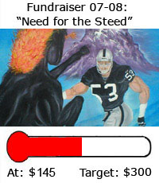
Caveats and provisos: In the event that there are some donations, but the target is not reached, I reserve the right to spend the donations on whatever I want. Like dinners at the Olive Garden. I also reserve this right should the target be reached, but I no longer really feel like buying the painting.
------
So as you can see from the above “progress bar” graphic, the donation figure steadily climbed to $145. This was very promising, but it was still a long way off the mark, and I was beginning to suspect I would fall short. I was already contemplating the succession of succulent Olive Garden feasts I would be using that money to finance. The kaleidoscope of savory Mediterranean flavors had begun to work its powers of affordable, family-dining hypnosis on me.
But not so fast.
Early in January of the following year, this is what happened.
------
Posted 01/07/2008
"WE FUCKING DID IT!"
Ladies and gentlemen…
VICTORY.
TLDR - Yesterday, two incredible guys, both named Paul, independently of each other donated the full remainder needed to buy the painting. Yeah, you may want to read the story. It’s fucking epic.
How was this feat possible? Needless to say, the magnificent achievement’s brick and mortar was the charitable will and good grace of you, the readers. Alas, noble though your efforts were, they were not enough. Standing on your shoulders, I only reached halfway up the wall, a far cry from being allowed to glimpse the pleasure gardens of painterly depictions of unbridled equine savagery waged against professional sports legends.
It’s at this point in the story which I smile and tap my pipe on the heel of my shoe. My gaze becomes abstracted, my eyes shimmer. I am no longer with you.
I am crumpled under the barstools of an unaccountable dive somewhere. I marinate in puddles of liquids to which I myself contributed not moments ago. I mumble incoherently with my lips around something—I think, and pray, it is a bottle. Slurred words wander from the drowsy orifice, and occasionally stumble from a runny nostril. “Horse”, was it? “Romanowski”, did I say? If the other disinterested patrons of the bar strained to listen, they might have made out the phrase “epic mountaintop struggle” as well.
I thrash. My delirious convulsions become more pronounced. Feverish visions pester me, like an overzealous carnival employee lurking, poised to frighten in a shoddy haunted house. My breathing is heavy. “No… horse…” I say. “I can’t… linebacker…” I wheeze. At once I sit upright, and shout, “I will never own that painting of a horse attacking a champion of the gridiron!!!”
There was a voice. A rich, amber-throated sort of vocal honey.
“Yes you will.”
My eyes find a pair of shoes. Cream-colored, polished like the ivory bust of an African prince, presented as a gift to European royalty. Draped over them, cuffs belonging to pants, also cream-colored and well pressed. I look up. And up. This man had no end! His elegant form broadened as it ascended, and was stopped, nay, commanded to halt by a pair of shoulders so sturdy, a banquet for a devout Catholic family of fifteen could be served on each, and the settings would not jostle an inch while a pious, severe grace was conducted by the patriarch. Hanging on these shoulders was a coat of immaculate cut, and a slightly different cream color. Other colors of cream accented his tie, shirt, and kerchief, and above all those was a bronze, manly face. His smile was wide and serene, his eyes winter blue, deep with kindness. He wore a cream-colored hat.
The room hushed. Somewhere a utensil fell onto a piece of glass or ceramic. Everyone knew.
It was Paul Elsewho.
“But… but sir. I can’t buy it. I haven’t the monetary discretion for the painting.” It was the sniveling blither indigenous to the tongue of the truly pathetic.
“You do now,” the man said, clicking a ball point pen, which now busied itself above a checkbook. “You can and you will buy that painting of a steed grappling with an Oakland-area athlete.”
The words resonated from his amber throat. I knew any words from it would be true. He handed me the check for $155 United States dollars.
Even though I know in my heart the assurance of this man stretches further than that of the U.S. Treasury for the merit of the currency he gives me, my craven mouth cannot help but persist in its loathsome habits of doubt. “But sir… what if it’s still not enough?”
That’s when the door exploded off its hinges, as if punched inward by the searing daylight. The light was then blocked by another imposing form, its silhouette boasting the contours of an exquisite physique. “That’s where I come in,” boomed the rugged, gravelly voice.
I clutched the garb of Paul E. and hid behind his confident frame. I quivered like a reprehensible bit of cowardly gelatin. Through the tears, I saw who it was. Everyone did. It was the legendary Paul W.
He tossed his scarf over one shoulder. The tables in the room lifted an inch off the ground with each astonishing footstep. The bartender hid. Paul dropped a sack full of valuables, which made a noise like a gypsy’s cart smashing into a brick wall. Printed on the bag was “$155”. As I opened the bag, a gleam of golden yellow illuminated my wonder-stricken face.
The mighty Paul W. caressed his stubble thoughtfully while giving me a stern look. The corner of his mouth turned upward, ever so slightly, and he winked. “Yeah, that oughta do you just fine,” he said. A man in a bowler cap sitting in a dingy corner must have rubbed him the wrong way at that moment. Paul W. turned to the man and, with a ferocity in his eyes typically recalled only by dead lion tamers, said, “What the fuck are you looking at?” The man’s head exploded.
Yes, the other Paul was right. It did oughta do me. It did oughta do me just fine. These two noble, charitable, magnificent men entered my life and changed everything. They asked for nothing in return. Indeed, what does one give the man who has everything, and everything to give? These two radiant titans of masculine virtue, they are perfect. They are gracious perfection itself. I feel emboldened as I am flanked by my two Pauls, my saviors of brawn, my dapper hulks of sapient mettle. I can do anything with my Pauls. My arms interlock with theirs, and together we spin pinwheels into the night. Spinning, spinning, laughing, and spinning.
I speak to you as a man who has had his faith in humanity not merely restored, not merely gutted, refitted with high-end parts and refurbished, but as a man who has had humanity itself, in the form of two exquisite Pauls, invest its faith in me.
I speak to you as a man who has just purchased a painting of an orange-haired pony flicking its hooves at a strapping pigskin warrior.
I speak to you—
VICTORIOUS.
------
I promptly took the money and ran like the black-sinewed, scarlet-maned wind. I ran to T’s Paypal page and bought his astonishing work of art.
All that was left to do was for me to sit back and wait for my painting to come in the mail.
And sit back and wait for my painting to come in the mail I did.
And come in the mail it did.
------
Posted 01/18/08
"Total Victory"
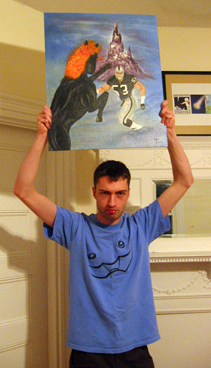
If you’ve followed me on this journey, from the harrowing setbacks at the start, to the stunning success of the fund raiser and ultimate validation of all that is right with humanity, then you know how important this day is.
This is a victory not for me, but for us all. It is a spirited, flaming-maned buck against the petulant voice which tells us our dreams can’t come true, and we are just wasting our time.
Dreams do come true. Your wildest wishes can happen. Magic is real. Fairytales are sobering nonfiction, and your bravest fancies are a rock-fucking-solid lock. Hold fast to your dreams and soon you will hold them over your head like the beating, dripping heart of the enemy commander.
When one commits his entire being to an idea or an outcome, never relenting or wavering, he cannot be stopped. It is not a matter of stating firmly, “One day, I will have that painting.” It is a matter of stating, and believing, “That painting is already mine. The momentary separation between myself and the painting is incidental to the reality, and of no consequence.” When one compresses all his drive and concentration onto the head of a pin for one goal, it can no longer be considered a goal. It is a conclusion manifest in the furling parchments of reality itself.
So I urge you to celebrate this victory with me. The road was long and rocky, the potholes numerous. But in retrospect, any perceived suspense was merely destiny’s sleight of hand!
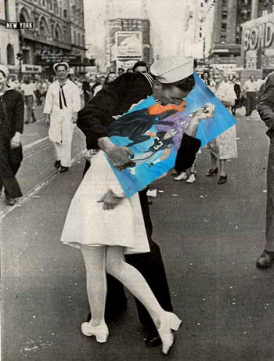
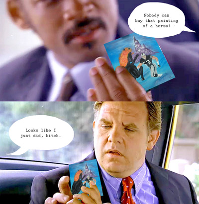
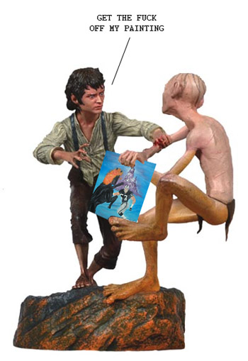
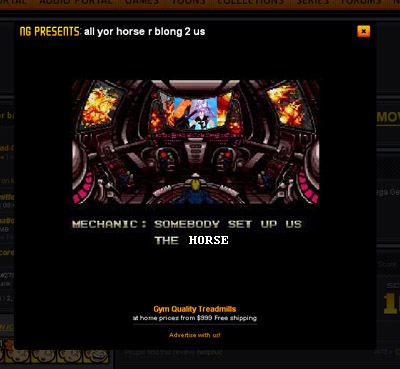
AND SO ON
I chronicled this remarkable tale in my old blog. I repost the major excerpts from this adventure here today for posterity.
------
Posted 12/17/2007
“Fundraiser 07-08: Need for the Steed”
A lot of webmasters such as bloggers or webcomic authors have fundraisers from time to time. It’s usually for something like a new computer (they are upgrading so they can better bring YOU content. How benevolent!), or some other piece of electronic equipment, or maybe even a medical procedure.
This practice is of course self-indulgent bullshit. If you need money for something, go get a job and save the money yourself. Shaking coins from your readership like a piggybank at the threat of suspended content or hiatus is a crass move indeed.
Unless you have a really good reason, that is. Like me.
Today I am launching a bold fundraising campaign, “Fundraiser 07-08: Need for the Steed”, to obtain the monies necessary to purchase this incredible painting.
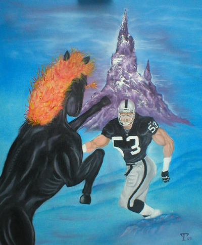
A while ago I discovered this artist simply named “T”. I was instantly smitten.
I “reviewed” (i.e. fawned over) the work at an earlier date. I have supplied an excerpt from this review here.
Everything about this painting is fucking amazing. Oakland Raiders linebacker Bill Romanowski fending off a wild, flaming black steed, in a mystical snowcapped mountain setting. I don’t know if it’s the concept alone, which itself is obviously mind-blowing. Maybe it’s also the curious, vaguely-humanoid musculature of the horse. It has a man’s bicep and triceps, and some very suspiciously man-like back muscles. Or maybe it’s the flaming mane, which on closer inspection, doesn’t resemble flame so much as synthetic orange puppet hair. This steed is either from hell, or has recently escaped Fraggle Rock, and is ready to tear the entire NFL a new asshole. But he didn’t count on bumping into Bill Romo (understandably, since he was bucking around the middle of the damned Himalayas).
I wrote that several years ago, and before I catch myself extolling the grandeur of the painterly genius of “T” again, I’ll just get to the point. A couple years ago around the same time of year, a little before Christmas, I wrote “T” an email offering to purchase the painting. In addition to gushing about his work with strategically vapid and obsequious prose, I offered him $50 for it. This offer was more than fair, I thought. He however declined, saying he simply could not accept any less than $400 for it.
Ok, so obviously I thought this guy was out of his fucking mind, turning down good money of any quantity for this ugly piece of shit. But that was probably just the anger of rejection talking. I would get over it.
Recently, I offered to buy the painting again, hoping he might have forgotten about his hard-line stance and come to terms with the unsellability of his putrid work (oops, there I go again with the bitterness. I have good reason again though.) I was prepared to offer another $50, maybe go a little higher if necessary. It’s turning into a kind of Christmas tradition. This is how all of the finest holiday traditions begin, I think. Through hostile adherence to something pointless and mildly excruciating.
This is how the latest interaction went down. Here’s the pitch I opened with:
———–
Hello,
I am writing you in regard to this beautiful painting
listed on your website. [link to painting]
Would you consider selling this?
A long time ago I wrote you on the same subject, but
it seemed the paintings were unavailable if I recall.
I am hoping they may be available now! What would you
charge for the above piece?
Thank you for your time.
———–
Personally I think it was a pretty well composed pitch. The tone is right, and I think I tailored my demeanor to seem just convincingly stupid enough to genuinely like this retarded painting (which I do!). Notice how I downplayed his vicious prior obstinacy by referring to the paintings as “unavailable if I recall”. Master stroke. Also I didn’t come out firing with a dollar figure, mainly because I didn’t want to scare him off right away. I needed to ease him into the fact that I am still only willing to part with $50 for this abomination.
Anyway, this was his reply.
———–
Hey Andrew,
Thanks for checking back. I do have a price on the painting it is $425. A few people have e-mailed me about buying it for less, but I would rather just hang on to it. I like the piece a lot and haven’t painted anything since it. It was to be the first in a series of sports fantasy paintings, but I have gotten side tracked with my job and other family things so I haven’t started painting again. I will get back to it soon. So, if you want it for the $425 it is yours, if not, I will keep it on my wall.
Thank you
T
———–
I grope for language to describe my reaction. Nay, a single word.
LIVIDITY.
$425?? So it seems he actually raised the price over the years. Oh, and PARDON my skepticism at the implication that he has received other offers over the years for his idiotic shit. He is probably only vaguely recollecting the ONE time it happened. From ME.
Naturally, I swallowed my indignation like the bitch I am. I just need that painting, and obviously it’s going to take more fancy footwork to pry it from his grubby, miserly hands. I responded, and this was my first sentence.
Wow, it is very cool that it is still for sale! I would
really love to have it.
Notice how easily I slip back into character. Whatever obscure pocket of personal acumen this is, I seem to possess it in spades. I probably could have been one of those spies who entrenches himself in Russian territory, uncovering intelligence on nuclear sites. Except instead of nukes, I would be disarming the Russian aristocracy of all their shitty paintings of horses, and vanishing with them into the night.
$425 is a lot of money for me. But I think your work
is good and you deserve to be compensated well for it.
If his heart wasn’t made of stone, it would melt at this line. I am playing up to his megalomaniacal belief that his work actually has value, combined with voicing a sad state of affairs for myself, like I am a charity case. For all he knows, I’m like Tiny Tim with a crutch, holding up my tin bowl, and instead of asking for gruel, saying, “Could I please ‘ave a paintin’ sir, preferably an NFL-star-battling-horse themed one, sir?” These sentiments would tickle any artist starved for positive feedback for his ghastly work, assuming he wasn’t totally deranged. Unfortunately, his heart is made of stone, and he is deranged.
I went on in that reply, trying to strike up a deal, but he didn’t respond. I was prepared to dish out more toadying remarks, too, like seriously encouraging him to take up painting again, and saying I would love to see him continue his series of sports fantasy paintings. This has the added bonus of being true. How about Terrel Owens putting a unicorn in a headlock while forging through an enchanted jungle? Or star kicker Adam Vinatieri kicking an ogre in the groin near a dark wizard’s castle? Or quarterback Tom Brady kissing a male elf atop a bubbling volcano? This series would be fucking dynamite, and I’d love to own the whole set (as long as I didn’t have to sell my kidneys for it).
Anyway, if I want this painting, obviously the only thing I can do is pay the full price for it. And I think you will agree, it would be ridiculous for me to spend that much of my own money on it.
That’s where YOU come in!
So pony up with the donations guys, and soon you will enjoy the vicarious delights of owning a completely unique work of art, through me!
If you donate, I will do something for you. I’m not really sure what yet. It depends on the size of the donation. If it’s only like $5 or $10, I might just write you a detailed thank you note. Maybe I will email you a custom sketch or a comic too, we’ll see. If you make a bigger donation, like $50, you can feel free to be more demanding with my time, like tell me to draw you a comic and mail it to you. I don’t know, but I’ll make it worth your while. Come on guys, let’s work on this together!
Of course the biggest reward is the giving itself, and knowing you are contributing to a cause much more worthwhile than something lame like upgrading my computer. YAWN!
The donation thermometer is ready to skyrocket!
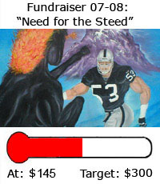
Caveats and provisos: In the event that there are some donations, but the target is not reached, I reserve the right to spend the donations on whatever I want. Like dinners at the Olive Garden. I also reserve this right should the target be reached, but I no longer really feel like buying the painting.
------
So as you can see from the above “progress bar” graphic, the donation figure steadily climbed to $145. This was very promising, but it was still a long way off the mark, and I was beginning to suspect I would fall short. I was already contemplating the succession of succulent Olive Garden feasts I would be using that money to finance. The kaleidoscope of savory Mediterranean flavors had begun to work its powers of affordable, family-dining hypnosis on me.
But not so fast.
Early in January of the following year, this is what happened.
------
Posted 01/07/2008
"WE FUCKING DID IT!"
Ladies and gentlemen…
VICTORY.
{kind=link}
TLDR - Yesterday, two incredible guys, both named Paul, independently of each other donated the full remainder needed to buy the painting. Yeah, you may want to read the story. It’s fucking epic.
How was this feat possible? Needless to say, the magnificent achievement’s brick and mortar was the charitable will and good grace of you, the readers. Alas, noble though your efforts were, they were not enough. Standing on your shoulders, I only reached halfway up the wall, a far cry from being allowed to glimpse the pleasure gardens of painterly depictions of unbridled equine savagery waged against professional sports legends.
It’s at this point in the story which I smile and tap my pipe on the heel of my shoe. My gaze becomes abstracted, my eyes shimmer. I am no longer with you.
I am crumpled under the barstools of an unaccountable dive somewhere. I marinate in puddles of liquids to which I myself contributed not moments ago. I mumble incoherently with my lips around something—I think, and pray, it is a bottle. Slurred words wander from the drowsy orifice, and occasionally stumble from a runny nostril. “Horse”, was it? “Romanowski”, did I say? If the other disinterested patrons of the bar strained to listen, they might have made out the phrase “epic mountaintop struggle” as well.
I thrash. My delirious convulsions become more pronounced. Feverish visions pester me, like an overzealous carnival employee lurking, poised to frighten in a shoddy haunted house. My breathing is heavy. “No… horse…” I say. “I can’t… linebacker…” I wheeze. At once I sit upright, and shout, “I will never own that painting of a horse attacking a champion of the gridiron!!!”
There was a voice. A rich, amber-throated sort of vocal honey.
“Yes you will.”
My eyes find a pair of shoes. Cream-colored, polished like the ivory bust of an African prince, presented as a gift to European royalty. Draped over them, cuffs belonging to pants, also cream-colored and well pressed. I look up. And up. This man had no end! His elegant form broadened as it ascended, and was stopped, nay, commanded to halt by a pair of shoulders so sturdy, a banquet for a devout Catholic family of fifteen could be served on each, and the settings would not jostle an inch while a pious, severe grace was conducted by the patriarch. Hanging on these shoulders was a coat of immaculate cut, and a slightly different cream color. Other colors of cream accented his tie, shirt, and kerchief, and above all those was a bronze, manly face. His smile was wide and serene, his eyes winter blue, deep with kindness. He wore a cream-colored hat.
The room hushed. Somewhere a utensil fell onto a piece of glass or ceramic. Everyone knew.
It was Paul Elsewho.
“But… but sir. I can’t buy it. I haven’t the monetary discretion for the painting.” It was the sniveling blither indigenous to the tongue of the truly pathetic.
“You do now,” the man said, clicking a ball point pen, which now busied itself above a checkbook. “You can and you will buy that painting of a steed grappling with an Oakland-area athlete.”
The words resonated from his amber throat. I knew any words from it would be true. He handed me the check for $155 United States dollars.
Even though I know in my heart the assurance of this man stretches further than that of the U.S. Treasury for the merit of the currency he gives me, my craven mouth cannot help but persist in its loathsome habits of doubt. “But sir… what if it’s still not enough?”
That’s when the door exploded off its hinges, as if punched inward by the searing daylight. The light was then blocked by another imposing form, its silhouette boasting the contours of an exquisite physique. “That’s where I come in,” boomed the rugged, gravelly voice.
I clutched the garb of Paul E. and hid behind his confident frame. I quivered like a reprehensible bit of cowardly gelatin. Through the tears, I saw who it was. Everyone did. It was the legendary Paul W.
He tossed his scarf over one shoulder. The tables in the room lifted an inch off the ground with each astonishing footstep. The bartender hid. Paul dropped a sack full of valuables, which made a noise like a gypsy’s cart smashing into a brick wall. Printed on the bag was “$155”. As I opened the bag, a gleam of golden yellow illuminated my wonder-stricken face.
The mighty Paul W. caressed his stubble thoughtfully while giving me a stern look. The corner of his mouth turned upward, ever so slightly, and he winked. “Yeah, that oughta do you just fine,” he said. A man in a bowler cap sitting in a dingy corner must have rubbed him the wrong way at that moment. Paul W. turned to the man and, with a ferocity in his eyes typically recalled only by dead lion tamers, said, “What the fuck are you looking at?” The man’s head exploded.
Yes, the other Paul was right. It did oughta do me. It did oughta do me just fine. These two noble, charitable, magnificent men entered my life and changed everything. They asked for nothing in return. Indeed, what does one give the man who has everything, and everything to give? These two radiant titans of masculine virtue, they are perfect. They are gracious perfection itself. I feel emboldened as I am flanked by my two Pauls, my saviors of brawn, my dapper hulks of sapient mettle. I can do anything with my Pauls. My arms interlock with theirs, and together we spin pinwheels into the night. Spinning, spinning, laughing, and spinning.
I speak to you as a man who has had his faith in humanity not merely restored, not merely gutted, refitted with high-end parts and refurbished, but as a man who has had humanity itself, in the form of two exquisite Pauls, invest its faith in me.
I speak to you as a man who has just purchased a painting of an orange-haired pony flicking its hooves at a strapping pigskin warrior.
I speak to you—
VICTORIOUS.
------
I promptly took the money and ran like the black-sinewed, scarlet-maned wind. I ran to T’s Paypal page and bought his astonishing work of art.
All that was left to do was for me to sit back and wait for my painting to come in the mail.
And sit back and wait for my painting to come in the mail I did.
And come in the mail it did.
------
Posted 01/18/08
"Total Victory"
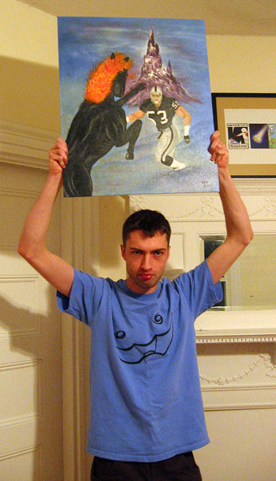
If you’ve followed me on this journey, from the harrowing setbacks at the start, to the stunning success of the fund raiser and ultimate validation of all that is right with humanity, then you know how important this day is.
This is a victory not for me, but for us all. It is a spirited, flaming-maned buck against the petulant voice which tells us our dreams can’t come true, and we are just wasting our time.
Dreams do come true. Your wildest wishes can happen. Magic is real. Fairytales are sobering nonfiction, and your bravest fancies are a rock-fucking-solid lock. Hold fast to your dreams and soon you will hold them over your head like the beating, dripping heart of the enemy commander.
When one commits his entire being to an idea or an outcome, never relenting or wavering, he cannot be stopped. It is not a matter of stating firmly, “One day, I will have that painting.” It is a matter of stating, and believing, “That painting is already mine. The momentary separation between myself and the painting is incidental to the reality, and of no consequence.” When one compresses all his drive and concentration onto the head of a pin for one goal, it can no longer be considered a goal. It is a conclusion manifest in the furling parchments of reality itself.
So I urge you to celebrate this victory with me. The road was long and rocky, the potholes numerous. But in retrospect, any perceived suspense was merely destiny’s sleight of hand!
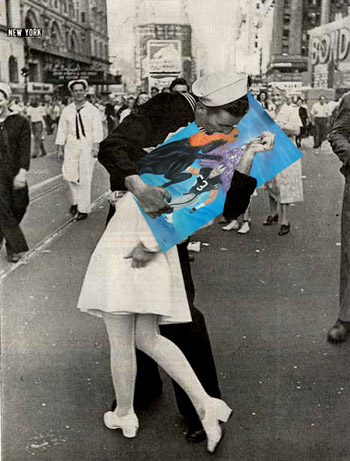
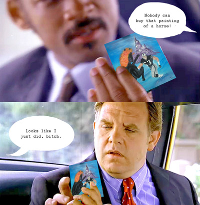
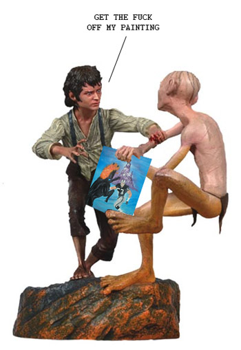
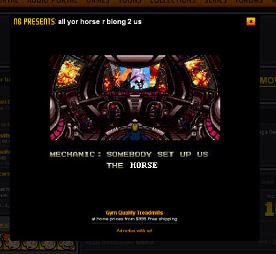
AND SO ON
Tuesday, December 23, 2008
Fancy-Santas are Stupid Imposters
(Since Christmas is in the air, I thought it would be a good time for a redux of this article posted in my old blog. It is probably the only thing worth salvaging from that blog and in this season of sharing I feel it is important to share it with you.)
I hate Fancy-Santas. Unlike the archetypical Santa, the cliché with the bright red suit, white beard, and unassuming accessories like black boots and mittens, the Fancy-Santa tries to be more than the cliché. He drapes himself in ruffled velvets, expensive European leathers, peculiar hats, and often can be found carrying around armloads of weird things, like a wreath, or a swan, or a fucking bush.
But what’s worse is his attitude. The Fancy-Santa acts like he’s too good to be a normal Santa. While a normal Santa is jolly and friendly, the Fancy-Santa is aloof and acts like a complete prick. He likes to think he’s mysterious, tiptoeing through the woods, occasionally pausing to cast an abstract gaze into the northern sky. What mortal could dare to even fathom the grand majesties behind his ice-blue eyes and gaudy attire? What mortal could afford one of his bullshit dolls or figurines?
You’ve probably seen a Fancy-Santa slowly rotating on a QVC broadcast for about $900, while a spokeswoman gingerly strokes his velvet robes. She uses words like “beautiful” and “exquisite” and “precious”. To her, the Fancy-Santa resembles everything good and decent left in her life, a life looted of joy by a succession of boorish ex-husbands. There is nothing boorish about a Fancy-Santa though. He is thoughtful, dignified, elegant—the perfect gentleman. And the perfect catch for a lonely middle-aged woman, if she could just find him in the fucking woods first. (protip: set a bear trap)
Still don’t know what I’m talking about? You’re lucky, then. But I’m afraid your good fortune runs out here.
This is a Fancy-Santa.
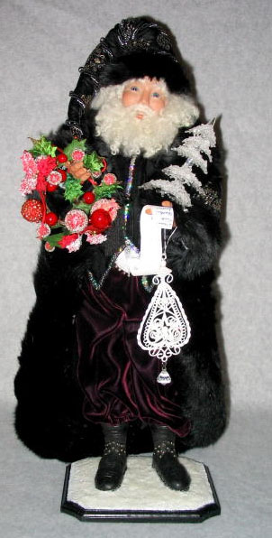
Just look at that asshole. Who the fuck does he think he is? What is he so happy about?
Listen, you imposter. You are not Kris Kringle. Put down the wreath, take off your silly robes, and go home.
They are always decked out in an absurd plethora of ridiculous shit. He’s got a small crystal tree. You know, in case of an emergency. And some kind of weird lacey doily hanging from it. Also, a list for authenticity’s sake, because—ha ha!—he’s got to confirm which children are naughty or nice. As if he’s going to be giving children jack shit.
If you ever run into a Fancy-Santa like this, the only proper recourse is to splash your eggnog in his face and pull down his pants.
Next. Get a load of this horse’s ass.
There’s always a vague implication that Fancy-Santas are a kind of rugged proprietor of the wilderness. A great mystical outdoorsman, oozing communion with nature. He is a noble champion of the woods and all its critters.
Bullshit!
He’s a glorified bum. Just because he lives in the woods doesn’t mean he owns them. And just because animals are stupid enough to sidle up to him doesn’t mean he won’t eat them and then use their pelts to craft another luxurious hooded robe. I imagine happening upon a Fancy-Santa skulking around in the woods is sort of like seeing Bigfoot. Except Bigfoot probably has the decency to at least dig a hole before he takes a shit on the ground.
This next one is a better example than the previous two, and I hate him all the more, because he takes himself more seriously.
It’s hard work being such a monumental bullshit artist like a Fancy-Santa. It helps to look grave and stern, as if you are burdened by crushing mountains of hidden wisdom. Secretly, the only wisdom he guards is an array of handy pointers on how to get fleas out of a beard.
I guess the unspoken hook to a Fancy-Santa is that they’re supposed to be magic. Like a fucking wizard. They really look like wizards, but with a Santa twist. I think the Fancy-Santa thing is really just a way for wizard freaks to get their jollies (yes, that was a Santa pun). But they can do so through the safety of mainstream Christmas orthodoxy. Similarly, the same middle-aged women who like wizards possibly like them because they remind them of Santa, the great paternal emblem, and perhaps hence, the “perfect man”. This perhaps further is the disturbing central pivot point for some weird fetish or visceral attraction programmed into the female mind set to erupt in middle age. The wizard/Santa allure is deep-rooted stuff, and expresses itself in many ways. I wonder if it explains in part the popularity of Harry Potter. Dumbledore was sort of like a Fancy-Santa. I wonder if J.K. Rowling collects Fancy-Santas. Of course, Dumbledore was proven to be gay, which on further reflection may be a critical part of the mythos. It makes these ideal mystical men unavailable, furthering the complex of unattainability. Come to think of it, now I’m sure all Fancy-Santas must be gay too. They are FANCY, after all. The rouge cheeks, the playful smirks. It’s all adding up. They’re a bunch of nomadic fags whisking through the snow.
But in reality, they aren’t even really all that magic. Because they’re stupid frauds. I mean, what can they really do that’s all that great? Maybe give you a sly wink, and when you turn around again, he’s gone. BIG FUCKING DEAL! He’s a self-absorbed jackass who would never use whatever lame powers he has to help anyone. He’s certainly not delivering presents. The real Santa doesn’t mess around. He’s got a whole army of slave labor devoted to making toys, and actually has the means to deliver them. A Fancy-Santa barely bothers with the pretense. He might get around to giving kids presents if all the children on the earth happened to live in the fucking woods with him, maybe in a two mile radius. But they don’t, they live in houses like normal people. Whenever a Fancy-Santa carries around toys, it is just for show. If you see him walking around with a teddy bear, I can guarantee you that in the near future, rather than give it to a youngster, he will burn it for warmth.
Then there are ones like this, which are doubly infuriating. This dude thinks he’s Gandalf the White. Jesus Christ, he’s so fucking pure, I bet every time he bends over, a flock of white doves flaps frantically out of his ass.
It’s passed off like he’s the Lord of Winter or some bullshit. If you ever see an idiot like this traipsing around, the proper thing to do is approach him from behind and push him into a pile of snow and then run away.
This one is riding a fucking bear. Go to hell, numbnuts!
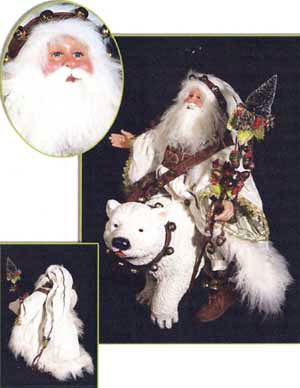
Look at the absurd hat on this one. And what exactly does he think he’s going to do with that sled full of toys? Who’s he trying to kid? Even he has to feel too much shame in his reprehensible appearance to parade that sled around in public. Anyway, I doubt he could push that thing more than a mile through the woods before suffering from cardiac arrest.

Then, as if standard Fancy-Santa fare weren’t dreadful enough, there are these themed ones. This one is sort of hobo-themed. This wayward wintry bindlestiff gazes vacantly into the clouds as if wondering where it all went wrong.
The answer is of course the moment he decided to become a Fancy-Santa.
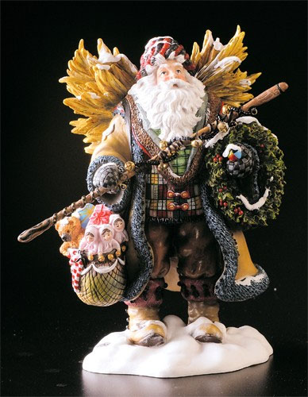
Surf’s up!!! There are few pleasures that compare to the experience of wringing sea water out of a puffy white beard.
This Fancy-Santa seriously needs to just go fuck off.
Even the Orient is getting in on the act! This Fancy-Santa is absolutely terrifying. I can’t tell whether he embodies the spirit of Christmas, or the malice of a dark Asian emperor. I’ve never seen a Santa, or any holiday figure, who I suspect would beat the shit out of me with one hand while he used the other to sip calmly from a bowl of soup.
That is all I have to say about Fancy-Santas for now. But there is a lot more to say on the subject, and when I uncover more of these vile and stomach-turning truths about these frauds you can be sure that I will post all the dirt here.
Maybe come Christmas morning the true Saint Nicholas will have left something to this effect beneath your tree.
I hate Fancy-Santas. Unlike the archetypical Santa, the cliché with the bright red suit, white beard, and unassuming accessories like black boots and mittens, the Fancy-Santa tries to be more than the cliché. He drapes himself in ruffled velvets, expensive European leathers, peculiar hats, and often can be found carrying around armloads of weird things, like a wreath, or a swan, or a fucking bush.
But what’s worse is his attitude. The Fancy-Santa acts like he’s too good to be a normal Santa. While a normal Santa is jolly and friendly, the Fancy-Santa is aloof and acts like a complete prick. He likes to think he’s mysterious, tiptoeing through the woods, occasionally pausing to cast an abstract gaze into the northern sky. What mortal could dare to even fathom the grand majesties behind his ice-blue eyes and gaudy attire? What mortal could afford one of his bullshit dolls or figurines?
You’ve probably seen a Fancy-Santa slowly rotating on a QVC broadcast for about $900, while a spokeswoman gingerly strokes his velvet robes. She uses words like “beautiful” and “exquisite” and “precious”. To her, the Fancy-Santa resembles everything good and decent left in her life, a life looted of joy by a succession of boorish ex-husbands. There is nothing boorish about a Fancy-Santa though. He is thoughtful, dignified, elegant—the perfect gentleman. And the perfect catch for a lonely middle-aged woman, if she could just find him in the fucking woods first. (protip: set a bear trap)
Still don’t know what I’m talking about? You’re lucky, then. But I’m afraid your good fortune runs out here.
This is a Fancy-Santa.
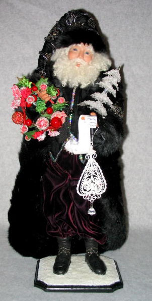
Just look at that asshole. Who the fuck does he think he is? What is he so happy about?
Listen, you imposter. You are not Kris Kringle. Put down the wreath, take off your silly robes, and go home.
They are always decked out in an absurd plethora of ridiculous shit. He’s got a small crystal tree. You know, in case of an emergency. And some kind of weird lacey doily hanging from it. Also, a list for authenticity’s sake, because—ha ha!—he’s got to confirm which children are naughty or nice. As if he’s going to be giving children jack shit.
If you ever run into a Fancy-Santa like this, the only proper recourse is to splash your eggnog in his face and pull down his pants.
Next. Get a load of this horse’s ass.
There’s always a vague implication that Fancy-Santas are a kind of rugged proprietor of the wilderness. A great mystical outdoorsman, oozing communion with nature. He is a noble champion of the woods and all its critters.
Bullshit!
He’s a glorified bum. Just because he lives in the woods doesn’t mean he owns them. And just because animals are stupid enough to sidle up to him doesn’t mean he won’t eat them and then use their pelts to craft another luxurious hooded robe. I imagine happening upon a Fancy-Santa skulking around in the woods is sort of like seeing Bigfoot. Except Bigfoot probably has the decency to at least dig a hole before he takes a shit on the ground.
This next one is a better example than the previous two, and I hate him all the more, because he takes himself more seriously.
It’s hard work being such a monumental bullshit artist like a Fancy-Santa. It helps to look grave and stern, as if you are burdened by crushing mountains of hidden wisdom. Secretly, the only wisdom he guards is an array of handy pointers on how to get fleas out of a beard.
I guess the unspoken hook to a Fancy-Santa is that they’re supposed to be magic. Like a fucking wizard. They really look like wizards, but with a Santa twist. I think the Fancy-Santa thing is really just a way for wizard freaks to get their jollies (yes, that was a Santa pun). But they can do so through the safety of mainstream Christmas orthodoxy. Similarly, the same middle-aged women who like wizards possibly like them because they remind them of Santa, the great paternal emblem, and perhaps hence, the “perfect man”. This perhaps further is the disturbing central pivot point for some weird fetish or visceral attraction programmed into the female mind set to erupt in middle age. The wizard/Santa allure is deep-rooted stuff, and expresses itself in many ways. I wonder if it explains in part the popularity of Harry Potter. Dumbledore was sort of like a Fancy-Santa. I wonder if J.K. Rowling collects Fancy-Santas. Of course, Dumbledore was proven to be gay, which on further reflection may be a critical part of the mythos. It makes these ideal mystical men unavailable, furthering the complex of unattainability. Come to think of it, now I’m sure all Fancy-Santas must be gay too. They are FANCY, after all. The rouge cheeks, the playful smirks. It’s all adding up. They’re a bunch of nomadic fags whisking through the snow.
But in reality, they aren’t even really all that magic. Because they’re stupid frauds. I mean, what can they really do that’s all that great? Maybe give you a sly wink, and when you turn around again, he’s gone. BIG FUCKING DEAL! He’s a self-absorbed jackass who would never use whatever lame powers he has to help anyone. He’s certainly not delivering presents. The real Santa doesn’t mess around. He’s got a whole army of slave labor devoted to making toys, and actually has the means to deliver them. A Fancy-Santa barely bothers with the pretense. He might get around to giving kids presents if all the children on the earth happened to live in the fucking woods with him, maybe in a two mile radius. But they don’t, they live in houses like normal people. Whenever a Fancy-Santa carries around toys, it is just for show. If you see him walking around with a teddy bear, I can guarantee you that in the near future, rather than give it to a youngster, he will burn it for warmth.
Then there are ones like this, which are doubly infuriating. This dude thinks he’s Gandalf the White. Jesus Christ, he’s so fucking pure, I bet every time he bends over, a flock of white doves flaps frantically out of his ass.
It’s passed off like he’s the Lord of Winter or some bullshit. If you ever see an idiot like this traipsing around, the proper thing to do is approach him from behind and push him into a pile of snow and then run away.
This one is riding a fucking bear. Go to hell, numbnuts!
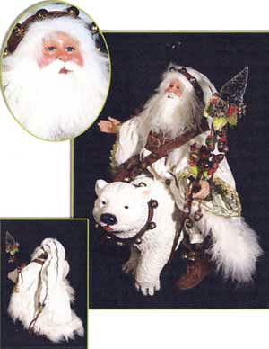
Look at the absurd hat on this one. And what exactly does he think he’s going to do with that sled full of toys? Who’s he trying to kid? Even he has to feel too much shame in his reprehensible appearance to parade that sled around in public. Anyway, I doubt he could push that thing more than a mile through the woods before suffering from cardiac arrest.
Then, as if standard Fancy-Santa fare weren’t dreadful enough, there are these themed ones. This one is sort of hobo-themed. This wayward wintry bindlestiff gazes vacantly into the clouds as if wondering where it all went wrong.
The answer is of course the moment he decided to become a Fancy-Santa.
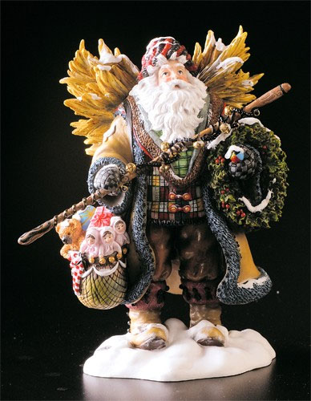
Surf’s up!!! There are few pleasures that compare to the experience of wringing sea water out of a puffy white beard.
This Fancy-Santa seriously needs to just go fuck off.
Even the Orient is getting in on the act! This Fancy-Santa is absolutely terrifying. I can’t tell whether he embodies the spirit of Christmas, or the malice of a dark Asian emperor. I’ve never seen a Santa, or any holiday figure, who I suspect would beat the shit out of me with one hand while he used the other to sip calmly from a bowl of soup.
That is all I have to say about Fancy-Santas for now. But there is a lot more to say on the subject, and when I uncover more of these vile and stomach-turning truths about these frauds you can be sure that I will post all the dirt here.
Maybe come Christmas morning the true Saint Nicholas will have left something to this effect beneath your tree.
Wednesday, December 17, 2008
The MS Paint Adventures Suggestion Box
Submit a comment to this post to make a suggestion for the latest MSPA story.
You can also leave any other sort of comment about the site here. That's cool too.
POST YOUR COMMENT
Some notes:
- Keep it short! I tend to clip all suggestions to be about 60 characters or less.
- Maybe this is obvious, but only make suggestions for the latest point in the story! Posting the suggestion "shoot safe" when I am 800 pages past that point doesn't make the slightest bit of sense!